Vat. gr. 754 - Transcription
transcribed by
encoded by
FWF Project 32988
Available under the Creative Commons Attribution 4.0 International (CC BY 4.0)
2023-03-02
The facsimiles of the manuscript are available: Vat. gr. 754
The pinakes identifier of the manuscript is: 67385
The content of the manuscript is:
- fols. 3r–36v: Prolegomena to the Psalmcatena
- fols. 37r–356v: Psalmcatena, hexaplaric variants and lexical glosses
- fol. 356v: Ps 151
- fols. 357r–395r: Odescatena (Odes both from the Old and New Testaments)
- fols. 395r–395v: Oratio Manasse, Hymnus matutinus, Trisagius
Form: codex
Material: parchment
Extent: 350 x 255 mm
Layout of the pages:
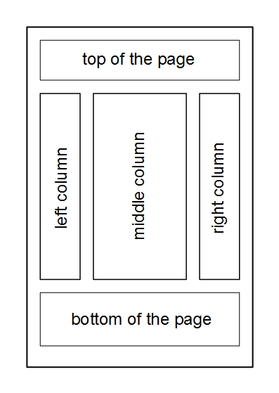- 395 folios (50 quires) with 35 lines per page (full page). Within the Psalmcatena 37 lines per page are traced but more than 37 are written. Fols. 3r–36v in disorder. 3 fols. missing.
Scripts:
- Minuscule letters: prolegomena, commentary fragments, glosses, texts on the last folio.
- Larger minuscule letters: Bible text, ektheseis.
- Capitals (majuscules): psalm inscriptions, hexaplaric variants, a number of glosses, author names and titles of works (if quoted at the beginning of a text).
Evagrius’ Scholia are counted with minuscules that begin anew with each Psalm. The 2161 “Athanasian” Scholia are counted with majuscules (from 1 to 100) and organized into 22 hundrets. These counting letters are repeated along the biblical verses.
Hexaplaric variants, glosses and commentary fragments are linked to the biblical verses through linking signs.
Decoration: Decoration or rubrication: absent.
Written in the 10th century.
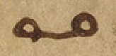LINKING SIGN 1
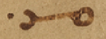LINKING SIGN 2
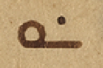LINKING SIGN 3
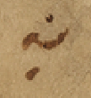LINKING SIGN 4
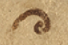LINKING SIGN 5
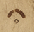LINKING SIGN 6
LINKING SIGN 7
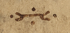LINKING SIGN 8
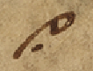LINKING SIGN 9
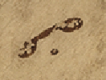LINKING SIGN 10
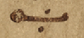LINKING SIGN 11
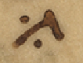LINKING SIGN 12
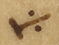LINKING SIGN 13
LINKING SIGN 14
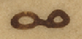LINKING SIGN 15
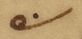LINKING SIGN 16
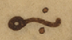LINKING SIGN 17
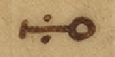LINKING SIGN 18
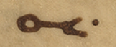LINKING SIGN 19
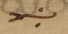LINKING SIGN 20
LINKING SIGN 21
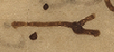LINKING SIGN 22
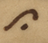LINKING SIGN 23
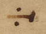LINKING SIGN 24
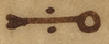LINKING SIGN 25
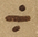LINKING SIGN 26
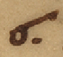LINKING SIGN 27
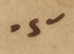LINKING SIGN 28
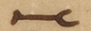LINKING SIGN 29
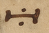LINKING SIGN 30
LINKING SIGN 31
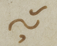LINKING SIGN 32
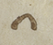LINKING SIGN 33
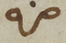LINKING SIGN 34
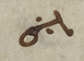LINKING SIGN 35
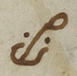LINKING SIGN 36
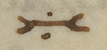LINKING SIGN 37
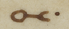LINKING SIGN 38
LINKING SIGN 39
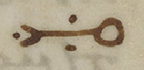LINKING SIGN 40
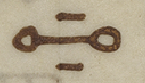LINKING SIGN 41
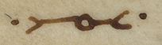LINKING SIGN 42
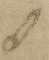LINKING SIGN 43
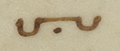LINKING SIGN 44
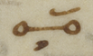LINKING SIGN 45
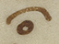LINKING SIGN 46
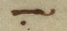LINKING SIGN 47
 LINKING SIGN 48
LINKING SIGN 48
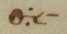LINKING SIGN 49
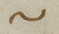LINKING SIGN 50
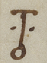LINKING SIGN 51
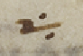LINKING SIGN 52
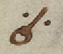LINKING SIGN 53
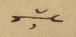LINKING SIGN 54
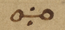LINKING SIGN 55
LINKING SIGN 56
LINKING SIGN 57
 LINKING SIGN 58
LINKING SIGN 58
LINKING SIGN 59
LINKING SIGN 60
LINKING SIGN 61
LINKING SIGN 62
LINKING SIGN 63
LINKING SIGN 64
LINKING SIGN 65
LINKING SIGN 66
LINKING SIGN 67
LINKING SIGN 68
LINKING SIGN 69
LINKING SIGN 70
LINKING SIGN 71
LINKING SIGN 72
LINKING SIGN 73
LINKING SIGN 74
LINKING SIGN 75
LINKING SIGN 76
LINKING SIGN 77
Abbreviation for καὶ
[middle column] [hypothesis]
(3) [left margin] Α [top of the page] [= Athanasius, exp. in Ps 1 - quotation (→ Edition)][top of the page] [hypothesis]
(1) [left margin] Ι [top of the page] [= Athanasius, exp. in Ps 2 - quotation (→ Edition)]Commentaryfragment: Gregor of Nyssa - Gregorius Nyss., Ps. inscr. II 11 (121,11–122,15 McDonough) in Ps 7,1
θωθέντων αὐτῷ χρηστῶν διὰ τῶν λόγων Χουσὶ. τῷ θεῷ τὴν αἰτίαν ἀνατιθεὶς. ταύτην τὴν εὐχαριστίαν πεποίηται• περιττὸν δ’ ἂν εἴη· τὰς ἱστορίας δι’ ἀκριβείας σοι ἐκτίθεσθαι· πῶς πιστὸς ὢν τῷ Δαυῒδ ἐν τοῖς ὑπασπισταῖς οὗτος ὁ Χουσὶ. ἐν τοῖς φίλοις τοῦ Ἀβεσσαλὼμ καταμίγνυται· καὶ πιθανώτερος γίνεται τῷ τυράννῳ. τῆς τοῦ Ἀχειτόφελ συμβουλῆς· ὅθεν συνέβη τούτου κατὰ τὴν εἰσήγησιν τῆς γνώμης κατακρατήσαντος αὐτοῦ. ὑφ’ ἑαυτοῦ καταπνιγεὶς τὸν κατὰ τοῦ Δαυῒδ τῷ Ἀβεσσαλὼμ συμβουλεύσαντα· καὶ μετ’ ὀλίγα: Ἡ μὲν τῇ ἱστορίᾳ. ἡ δὲ τῇ ψαλμῳδίᾳ ἐγγέγραπται· ἡμῖν δὲ σκοπός ἐστι τῶν ἐν τάξει τῶν ψαλμῶν εἱρμὸν κατανοῆσαι. δι’ οὗ τῷ ἀγαθῷ προσαγόμεθα· οὐκοῦν τὴν ἐνταῦθα γνώμην. τὴν ἀναιρετικὴν τοῦ ἐπιβουλεύοντος ἡμῖν κατανοήσωμεν· τίς οὖν ἐστιν αὕτη; τὸ ἴσον εἰς κακίαν ἡγεῖσθαι· ἄρχειν τε ἀδικίας καὶ ἀμύνεσθαι τὸν ἀπάρξαντα· τιμᾶται γὰρ ἑαυτῷ τῶν ἐσχάτων· καὶ τῆς καθ’ ἑαυτοῦ τιμωρίας ὁριστὴς γίνεται. εἰ εὑρεθείη κακοῦ τὸ κακὸν ὥσπερ ἐν συναλλάγματι διαμείψας· καὶ ἀναδοὺς τοῖς προπαρασχομένοις, ὃ ἔλαβεν· καὶ οὕτως μετὰ τοὺς ἀγῶνας τούτους. πάλιν νικητὴς ἀναδείκνυται· διαδέχεται γὰρ ἐπιγραφὴ. τὸ ὑπὲρ τῶν ληνῶν προ
Lemma: Ps 7,1
Attribution: Γρη(γορίου) Νύ(σσης)
Commentaryfragment: (Evagrius) - Evagrius, schol. nr. α´ in Ps 7,5a (308 Rondeau – Géhin – Cassin)
Πρὸς ἀμνησικακίαν ἀναγκαῖον τὸ ῥητόν τοῦτο: –
Lemma: Ps 7,5a
Attribution: α´
Commentaryfragment: (Athanasius) - Athanasius, exp. in Ps 7,4–5 (→ Edition)
Τὸ ἀμνησίκακον προβάλλεται· ἐκκαλούμενος δι’ αὐτοῦ εἰς ἔλεον τὸν θεόν:
Lemma: Ps 7,4a
Attribution: ΟΔ
Commentaryfragment: (Athanasius) - Athanasius, exp. in Ps 7,2–3 (→ Edition)
Ἐπειδὴ ἀνθρώπῳ φησὶ περὶ σωτηρίας οὐ θαρρῶ. εἰ καὶ τοῦ Χουσὶ οἱ λόγοι καλοί: σῶσόν με καὶ ἐκ τῶν παρόντων μὲν ἐχθρῶν. μάλιστα δὲ ἀπὸ τοῦ ἐφεδρεύοντος νοητοῦ λέοντος τῆν ἡμετέραν ψυχῆν: –
Lemma: Ps 7,2a
Commentaryfragment: Basilius of Caesarea - Basilius, hom. in Ps. 7 (PG 29,232 B10–13; 232 D2–233 A2) in Ps 7,2
Τίς οὖν ἡ διαφορὰ τοῦ σώζεσθαι καὶ τοῦ ῥύεσθαι; ὅτι τῆς σωτηρίας μὲν κυρίως. οἱ ἀσθενοῦντες χρῄζουσιν· τοῦ ῥύεσθαι δὲ. οἱ ἐν τῇ αἰχμαλωσίᾳ κατεχόμενοι· εὔχεται οὖν περὶ τῆς ἐνταῦθα ζωῆς καὶ περὶ τῆς μελλούσης· σῶσον γάρ με φησὶν ἐνταῦθα ἀπὸ τῶν διωκόντων· ῥῦσαι δέ με ἐκεῖ. ἐν τῷ καιρῷ τῆς ἐρεύνης:
Lemma: Ps 7,3a (sic)
Attribution: Βασιλ(είου)
Commentaryfragment: Theodoretus - Theodoretus, comm. in Ps 7,5–6 (PG 80,908 C2–D5)
Τῆς ἀρετῆς πολλὰ μόρια· οὐ γὰρ μόνον σωφροσύνη καὶ φρόνησις. ἀλλὰ καὶ ἀνδρεία καὶ δικαιοσύνη· ἐνταῦθα τοίνυν οὐ τὴν ἄκραν ἑαυτῷ μαρτυρεῖ. ἀλλ’ ὅτι τούτοις ἥκιστα τοὺς πολέμους ἠδικηκὼς. τὴν ἄδικον δι’ αὐτοὺς ὑπομενεῖ φυγήν· οὐ μόνον γάρ φησιν ἀδικίας οὐκ ἦρξα. ἀλλ’ οὐδὲ τοὺς ἠδικηκότας ἠνεσχόμην ἀμύνασθαι πώποτε· πολλάκις γὰρ τὸν Σαοὺλ ὑποχείριον λαβὼν. τῆς ἀδίκου δυσμενείας δίκας οὐκ ἐπραξάμην οὗ δὴ χάριν σε δέσποτα παρακαλῶ. τὰ πάντα σαφῶς ἐπιστάμενον. δικάσαί μοι δικαίως· καὶ εἴ τι τοιοῦτον δέδρακα πώποτε
Lemma: Ps 7,5a
Attribution: Θεοδ(ωρήτου)
Commentaryfragment: Theodoretus - Theodoretus, comm. in Ps 7,5–6 (PG 80,908 C2–D5)
τῆς μὲν σῆς κηδεμονίας γυμνῶσαι· τοῦτο γὰρ λέγει ἀποπέσοιμι ἄρα ἀπὸ τῶν ἐχθρῶν μου κενός· ὑποχείριον δὲ τοῖς δυσμενέσιν ἐκδοῦναι ὡς ἂν μὴ μόνον τῆς παρὰ σοῦ με δόξης καὶ βασιλείας γυμνώσαιεν. ἀλλὰ καὶ καταγελάστῳ παραδοῖεν θανάτῳ· τοῦτο γὰρ ἐσήμανεν εἰρηκὼς. τὴν δόξαν μου εἰς χοῦν κατασκηνώσαι: –
Lemma: Ps 7,5a
Attribution: Θεοδ(ωρήτου)
Commentaryfragment: Origenes - Evagrius, schol. nr. γ´ in Ps 7,6c (310 Rondeau – Géhin – Cassin)
Χοϊκὸς ἀντὶ ἐπουρανίου γενοίμην: –
Lemma: Ps 7,6b (sic)
Attribution: γ´ ωριγε(νους)
Hexaplaric variant: Symmachus, Aquila (Ps 7,7b)
Ϲ ἐν χόλῳ· A ἐν ἀνυπερθεσίαις:
Lemma: Ps 7,7c1 (καὶ ἐξεγέρθητι) sic
Commentaryfragment: Origenes - Evagrius, schol. nr. δ´ in Ps 7,7b (312 Rondeau – Géhin – Cassin)
Ἐὰν ὑψωθῶ πάντας ἑλκύσω πρὸς ἐμαυτὸν φησὶν ὁ σωτήρ:
Lemma: Ps 7,7b
Attribution: δ´ ωρ(ι)γε(νους)
Commentaryfragment: (Athanasius) - Athanasius, exp. in Ps 7,7b (→ Edition)
Τουτέστιν ἐν τοῖς κραταιοῖς τῶν ἐχθρῶν μου· πέρατα γὰρ τὰ ἄκρα δηλοῖ: –
Lemma: Ps 7,7b
Commentaryfragment: Eusebius - Origenes, schol. (?) in Ps 7,5b (= PG 27,80 A4–6; PG 12,1180 A10–13)
Ὁ μὲν δίκαιος νικήσας. πλήρης ἀπὸ τῶν ἐχθρῶν ἐξέρχεται· ὁ δὲ φαῦλος. ὡς νικηθεὶς. ἀποπίπτει αὐτῶν κενὸς. καὶ οὐδὲν ἔχων πληρώματος: –
Lemma: Ps 7,5b
Attribution: Εὐσε(βίου)
Commentaryfragment: (Athanasius) - Athanasius, exp. in Ps 7,6 (→ Edition)
Ὃ λέγει τοιοῦτόν ἐστιν· εἰ καὶ τό καὶ τὸ ἐποίησα. μὴ ἐλευθερωθείην τῆς ἁμαρτίας πρὸ τοῦ θανάτου: –
Lemma: Ps 7,6a
Attribution: ΟΕ
Commentaryfragment: Origenes - Evagrius, schol. nr. β´ in Ps 7,5b (310 Rondeau – Géhin – Cassin)
πάντες ἐλάβομεν. καὶ χάριν ἀντὶ χάριτος: διόπερ καὶ οἱ τοιοῦτοι. κάλαμοι λέγονται τρέφοντες ἐν ἑαυτοῖς τὰ θηρία· ἐπιτίμησον γάρ φησὶ τοῖς θηρίοις τοῦ καλάμου· καὶ ὁ διάβολος φησὶν ὁ ᾿Ἰὼβ. παρὰ παντοδαπὰ δένδρα κοιμᾶται· παρὰ πάπυρον καὶ βούτομον καὶ κάλαμον· αὐτὸς γὰρ βασιλεύς ἐστι πάντων τῶν ἐν τοῖς ὕδασι: –
Lemma: Ps 7,6a (sic)
Attribution: β´ ωριγε(νους)
Commentaryfragment: Eusebius - Origenes, schol. (?) in Ps 7,6b–c (PG 12,1180 B10–15; PG 23,124 B12–C2)
Ἡ ζωὴ τοῦ ἔτι τὴν εἰκόνα τοῦ χοϊκοῦ φοροῦντος. καταπεπάτηται ὑπὸ τοῦ ἐχθροῦ εἰς γῆν· οὕτως δὲ κἂν δοξάζεσθαί ποτε δοκῇ. κατεσκήνωσεν αὐτοῦ ἡ δόξα εἰς χοῦν· ὡς τῶν τοιούτων διὰ δόξαν· καὶ τὸν παρ’ αὐτὸν ἔπαινον. ἢ τὴν παρ’ αὐτοῖς ἀποδοχήν: –
Lemma: Ps 7,6b
Attribution: Εὐσε(βίου)
Commentaryfragment: (Athanasius) - Athanasius, exp. in Ps 7,7c1 (→ Edition)
Σαφῶς περὶ τῆς θεοφανείας τοῦ σωτῆρος διὰ τῶν παρόντων εὐαγγελίζεται: –
Lemma: Ps 7,7c1
Attribution: ΟZ
Commentaryfragment: Hesychius - Hesychius, comm. magnus (?) in Ps 7,7c (ineditum?)
Ἐξεγέρθητι φησὶν ἐλθὲ ἐν προστάγματι τῆς κατὰ σάρκα σου θεοφανείας· καὶ ἀνάστηθι ἐκ θανάτου ἐθελουσίου· καὶ τριημέρου ταφῆς. καὶ συναγωγὴ λαῶν· – οὐ τοῦ ἐμπλήκτου ἔτι ἰσραὴλ. ἀλλὰ τοῦ ἐκ περάτων εἰς πέρατα γῆς ἐθνῶν λαοῦ – κυκλώσει σε: –
Lemma: Ps 7,7c
Attribution: Ἡσυχ(ίου)
Commentaryfragment: (Athanasius) - Athanasius, exp. in Ps 7,7c2 (→ Edition)
Ἄνωθεν γὰρ διὰ τῶν πατριαρχῶν. ταύτην ἡμῖν τὴν σωτηρίαν ὑπέσχετο: –
Lemma: Ps 7,7c2
Attribution: ΟΗ
Commentaryfragment: (Athanasius) - Athanasius, exp. in Ps 7,8a (→ Edition)
Σαφῶς διὰ τῶν παρόντων. τῆς ἐκκλησίας τὴν εἰς αὐτὸν πίστιν δηλοῖ: –
Lemma: Ps 7,8a
Attribution: ΟΘ
Commentaryfragment: (Athanasius) - Athanasius, exp. in Ps 7,8b–9a (→ Edition)
Ταύτης μὲν τῆς συναγωγῆς δηλονότι· τὸ δὲ εἰς ὕψος. ἢ τὸν τίμιον αἰνίττεται σταυρὸν εἰς ὃν ἀνήνεγκεν ἡμῶν τὰς ἁμαρτίας. ἢ τὴν εἰς οὐρανοὺς ἀναφοίτησιν· ἐπορεύθη γὰρ ἐμφανισθῆναι τῷ προσώπῳ τοῦ πατρὸς ὑπὲρ ἡμῶν: –
Lemma: Ps 7,8b-9a
Attribution: Π
Hexaplaric variant: Symmachus (Ps 7,9c)
Ϲ ἁπλότητά μου τὴν ἐπ᾿ ἐμοί: –
Lemma: Ps 7,10a (πονηρία) sic
Commentaryfragment: Origenes - Evagrius, schol. nr. ε´ in Ps 7,10 (312 Rondeau – Géhin – Cassin)
Ἐὰν συντελεσθῇ ἡ πονηρία τῶν ἁμαρτωλῶν. ὁ δίκαιος κατευθύνει τὴν ὁδὸν αὐτοῦ μηκέτι πολεμούμενος ὑπ’ αὐτῶν:
Lemma: Ps 7,10a
Attribution: ε´ ωρ(ι)γε(νους)
Hexaplaric variant: Aquila, Symmachus, Quinta, Sexta (Ps 7,10b)
A Ϲ Ε´ S´ καὶ κατευθύνει δίκαιος:
Lemma: Ps 7,9b (κρῖνόν με) sic
Commentaryfragment: (Athanasius) - Athanasius, exp. in Ps 7,9b (→ Edition)
Ἀξιοῖ πάλιν ἀπὸ τῶν ὄντων ἐχθρῶν σωθῆναι· ἀφ’ ὧν ἔπραξαν τὸν ἔλεον ἐκκαλούμενος: –
Lemma: Ps 7,9b–10b
Attribution: ΠΑ
Commentaryfragment: Anonymous - Theodoretus, comm. in Ps 7,9b–c (PG 80,909 C2–15)
Οὐ δικαιοσύνην ἑαυτῷ διὰ τούτων τῶν λόγων μεμαρτύρηκεν ὁ θεῖος Δαυΐδ· τἀναντία γὰρ αὐτοῦ βοῶντος ἀκούομεν· ὅτι τὴν ἀνομίαν μου ἐγὼ γινώσκω· καὶ ἡ ἁμαρτία μου ἐνώπιόν μου ἐστι διὰ παντός· καὶ εἶπον ἐξαγορεύσω κατ’ ἐμοῦ τὴν ἀνομίαν μου τῷ κυρίῳ· ἀλλὰ δικαιοσύνην. τὴν ἐν τῷ προκειμένῳ πράγματι λέγει· οὔτε γάρ φησιν τὸν Ἀβεσσαλὼμ ἠδίκηκά τι· οὔτε τὸν Ἀχιτώφελ· οὔτε τοὺς μετὰ τούτων κατ’ ἐμοῦ στρατεύοντας· κατὰ ταύτην τοίνυν τὴν δικαιοσύνην καὶ τὴν ἀκακίαν. κριθῆναι παρακαλῶ. καὶ μὴ κατὰ τὰς ἤδη παρ’ ἐμοῦ γεγενημένας πλημμελείας. αὐ
Lemma: Ps 7,9b
Commentaryfragment: Anonymous - Theodoretus, comm. in Ps 7,9b–c (PG 80,909 C2–15)
τὴν καθ’ αὑτὴν κριθῆναι τὴν παροῦσαν ὑπόθεσιν ἱκετεύω. καὶ μὴ ἑτέρων νῦν δοῦναι δίκας ἁμαρτημάτων: –
Lemma: Ps 7,9b
Commentaryfragment: Eusebius - Origenes, schol. (?) in Ps 7,10a (PG 12,1181 A4–6)
Ὅτε οὐκέτι ἁμαρτάνει τις. συντελεῖται αὐτοῦ ἡ πονηρία. ἠREGἢ ἡ πονηρία τῶν ἁμαρτωλῶν. ὁ διάβολος ἐστιν: –
Lemma: Ps 7,10a
Attribution: Εὐσε(βίου)
Commentaryfragment: Athanasius - Athanasius, exp. in Ps 7,10c–11 (→ Edition)
Ἐπειδὴ οἶδας φησὶ τῆς ἡμετέρας καρδίας τὰ κινήματα. τούτου χάριν τὴν βοήθειαν ἐξαιτῶ: –
Lemma: Ps 7,10c
Attribution: ΠΒ Ἀθανα(σίου)
Commentaryfragment: (Athanasius) - Athanasius, exp. in Ps 7,12–14 (→ Edition)
Σαφῶς διὰ τῶν τοιούτων παρίστησι τὸ μακρόθυμον τοῦ θεοῦ· ἀναβολὴν μὲν ἔχων τῆς ἡμετέρας κολάσεως. οὐ μὴν παντελῆ συγγνώμην: –
Lemma: Ps 7,12a
Attribution: ΠΓ
Commentaryfragment: Anonymous - Origenes, schol. (?) in Ps 7,13–17 (PG 12,1181 A8–10); cf. PG 23,125 B3–5 - sub auctore Eusebio (pro Origene?) Paris. gr. 166–167 (f. 14v)
Μήποτε παρασεσιωπημένως ταῦτα περὶ τοῦ διαβόλου λέγεται· οὗτοι γὰρ πρὸς τούτοις καὶ ὠδίνησαν ἀδικίαν. καὶ τὰ ἑξῆς ὀργὴ τυγχάνων: –
Lemma: Ps 7,13a
Commentaryfragment: Theodoretus - Theodoretus, comm. in Ps 7,10c–11 (PG 80,912 A2–13 sub Ps 7,11)
Νεφροὺς ἐνταῦθα. τοὺς λογισμοὺς ὀνομάζει· ἐπειδὴ γὰρ τὰς ὑπογαστρίους ὀρέξεις οἱ νεφροὶ διεγείρουσιν. ἐντεῦθεν δὲ λοιπὸν κινοῦνται τῆς ἐπιθυμίας οἱ λογισμοί· νεφροὺς τροπικῶς τοὺς λογισμοὺς προσηγόρευσεν· ὁ τοίνυν φησὶ τοὺς κεκρυμμένους τῆς διανοίας τῶν ἀνθρώπων λογισμοὺς ἐπιστά μενος. δικαίαν μοι παρέξει βοήθειαν. ἅτε δὴ τοῦτο ποιεῖν εἰωθώς· τοῖς γὰρ ἀδικουμένοις ἐπαμύνων διατελεῖ· ἐντεῦθεν λοιπὸν δὲ αἰνίττεται τοὺς πονηρίᾳ συζῶντας τὰς δικαίας τιμωρίας ὑποδεικνὺς. καὶ προ[σ]αγορεύει τοῦ Ἀχειτόφελ τὸν ὄλεθρον: –
Lemma: Ps 7,11a (sic)
Attribution: Θεοδ(ωρήτου)
Commentaryfragment: (Evagrius) - Evagrius, schol. nr. ζ´ in Ps 7,14a (314 Rondeau – Géhin – Cassin)
σκεύη θανάτου εἰσὶν. ἀκάθαρτα λόγια:
Lemma: Ps 7,14a
Attribution: ζ´
Commentaryfragment: (Evagrius) - Evagrius, schol. nr. ζ´ (ἄλλο) in Ps 7,14a (314 Rondeau – Géhin – Cassin)
Εἰ σκεύη θανάτου εἰσὶν αἱ τὸν θάνατον ἔχουσαι ψυχαὶ, σκεύη ζωῆς εἰσιν αἱ τὴν ζωὴν ἔχουσαι ψυχαί· οὕτως γὰρ καὶ Παῦλον σκεῦος ἐκλογῆς ὠνόμασεν ὁ κύριος:
Lemma: Ps 7,14a
Attribution: ἄλλο·
Commentaryfragment: (Evagrius) - Evagrius, schol. nr. ς´ in Ps 7,14b (314 Rondeau – Géhin – Cassin)
Καιόμενοί εἰσιν, οἱ τὰ πεπυρωμένα βέλη τοῦ διαβόλου δεχόμενοι: –
Lemma: Ps 7,14b
Attribution: ς´
Commentaryfragment: (Evagrius) - Evagrius, schol. nr. θ´ in Ps 7,15 (316 Rondeau – Géhin – Cassin)
Διατοῦτο ἔτεκεν ἀνομίαν. ἐπειδὴ συνέλαβεν πόνον καὶ ὠδίνησεν ἀδικίαν· αὕτη γὰρ ἡ ἀκολουθία τῆς φύσεως:
Lemma: Ps 7,15b
Attribution: θ´
Commentaryfragment: Eusebius - Origenes, schol. (?) in Ps 7,14a (PG 12,1181 A11–15)
Ὁ πατὴρ τοῦ εἰπόντος ἐγὼ εἰμὶ ἡ ζωὴ. οὐχ ἑτοιμάζει ἐν τόξῳ αὐτοῦ σκεύη θανάτου· τίθησι γοῦν τὸ τόξον αὐτοῦ ἐν τῇ νεφέλῃ. ἵνα μὴ ἐπαγάγῃ ὕδωρ κατακλυσμοῦ ἐπὶ τὴν γῆν· διὸ περὶ τοῦ διαβόλου ταῦτα λέγεσθαι νομιστέον: -
Lemma: Ps 7,14a
Attribution: Εὐσε(βίου)
Commentaryfragment: (Athanasius) - Athanasius, exp. in Ps 7,14b (→ Edition)
Βέλη μὲν τὴν τιμωρίαν· καιομένοις δὲ. τοῖς ἀξίοις πυρός: -
Lemma: Ps 7,14b
Attribution: ΠΔ
Commentaryfragment: Theodoretus - Theodoretus, comm. in Ps 7,14b (PG 80,912 C1–5)
σονται βέλεσι: –
Lemma: Ps 7,14b
Attribution: Θεοδ(ωρήτου)
Commentaryfragment: (Athanasius) - Athanasius, exp. in Ps 7,15a (→ Edition)
Ὁ ἐχθρὸς τῆς ἡμετέρας ζωῆς: –
Lemma: Ps 7,15a
Attribution: ΠΕ
Commentaryfragment: (Athanasius) - Athanasius, exp. in Ps 7,15b (→ Edition)
Τουτέστι καὶ βεβούληται καὶ εἰς ἔργον ἐξήγαγε τὰ σκέμματα: –
Lemma: Ps 7,15b
Attribution: ΠS
Commentaryfragment: Eusebius - Origenes, schol. (?) in Ps 7,15b (PG 12,1181 B9–C3)
Ὁ μὴ φιλόθεος ἀλλὰ φιλήδονος. ἀνάλογον αἷς δουλεύει ἡδοναῖς συλλαμβάνει πόνον ἕνα συνημμένον· καὶ μὴ ἔχοντα μεταξὺ διάλειμμα· καὶ ὠδίνει ἀδικίαν· καὶ τίκτει ἀνομίαν· ἐκ δὲ τῶν ἐναντίων· ὁ μὴ φιλήδονος ἀλλὰ φιλόθεος. ἀνάλογον οἷς ἀναδέχεται δι’ ἀρετὴν πόνοις. συλλαμβάνει εὐπάθειαν τὴν χαρὰν μίαν συνημμένην καὶ μὴ ἔχουσαν μεταξὺ διάλειμμα· καὶ ὠδίνει δικαιοσύνην· καὶ τίκτει εὐνομίαν. καὶ οὕτως τέκνα γίνεται ἤτοι ἀνομίας ἢ εὐνομίας ἕκαστος:
Lemma: Ps 7,15b
Attribution: Εὐσε(βίου)
Commentaryfragment: (Athanasius) - Athanasius, exp. in Ps 7,16–17a (→ Edition)
Θάνατον γὰρ κατασκευάσας κατὰ τοῦ σωτῆρος Χριστοῦ. θανάτῳ παραδίδοται: –
Lemma: Ps 7,16a
Attribution: ΠΖ
Commentaryfragment: Eusebius - Origenes, schol. (?) in Ps 7,16 (cf. PG 12,1181 C12–13); ὁ γὰρ – ὤρυξεν non habet PG
Μήποτε ὁ λάκκος χωρίον τί κολάσεως ἐστιν· εἰς ὃν προνοίᾳ θεοῦ αὐτὸς ὁ ὀρύξας ἐμπεσεῖται· ὁ γὰρ ὀρύσσων βόθρον. ἐμπεσεῖται εἰς αὐτόν: τὸ αὐτὸ μέντοι. γε καὶ λάκκος ἐστὶν καὶ βόθρος· λάκκος μὲν. τῇ προθέσει τοῦ ὀρύσσοντος καὶ σκάπτοντος· ἀλλ᾿ ἐπεὶ οὐ δύναται ὕδωρ συνέχειν. βόθρος γίνεται εἰς ὃν ἐμπεσεῖται ὁ ἐργασάμενος αὐτόν· καὶ τάχα οὐκ ἂν εἶπεν φρέαρ ὤρυξεν;
Lemma: Ps 7,16a
Attribution: Εὐσε(βίου)
Commentaryfragment: Theodorus - Theodorus, fr. in Ps 7,16 (41 Devreesse)
Βαθυτέραν φησὶν εἰργάσατο τὴν ἐπιβουλήν· ἐκ μεταφορᾶς τὸ δολερὸν καὶ βαθὺ τῆς βουλῆς παραστήσας:
Lemma: Ps 7,16a
Attribution: Θεοδ(ώρου)
Commentaryfragment: Anonymous - Origenes (?), fr. in Ps 7,17b (PG 12,1181 C13–D5)
Ἰσόπεδός ἐστιν αὐτοῦ ἡ κορυφὴ τῷ λοιπῷ σώματι· οὐδὲν γὰρ αὐτοῦ ἄνω. διὸ καὶ δράκων ποῦ λέγεται· εἰκότως οὖν ἡ ἐπαρθεῖσα καὶ ὑψωθεῖσα κατὰ τῆς γνώσεως τοῦ θεοῦ ἀδικία αὐτοῦ καθαιρουμένη, ἐπὶ τὴν κορυφὴν αὐτοῦ καταβήσεται: –
Lemma: Ps 7,17b
Commentaryfragment: Anonymous - Theodoretus, comm. in Ps 7,18 (PG 80,913 A1–3)
Ἐγὼ δὲ τοσαύτης παρὰ τοῦ θεοῦ προνοίας τυχὼν. ὑμνήσω τὸν εὐεργέτην διηνεκῶς, τῆς κρίσεως τὸ δίκαιον διηγούμενος:
Lemma: Ps 7,18a
Hypothesis: (Athanasius) - Athanasius, exp. in Ps 8,1
Πάλαι μὲν ἐν τῇ νομικῇ λατρείᾳ. ὃν ἦν προλήνιον. τὸ θυσιαστήριον δηλονότι τὸ ἐν τῷ νεῴ· μετὰ δὲ τὴν τῶν ἐθνῶν κλῆσιν. πολλαὶ ληνοί· αὗται δὲ ἂν εἶεν. αἱ ἐκκλησίαι αἱ τοὺς τῶν κατορθούντων ἐν θεοσεβείᾳ δεχόμεναι καρπούς:
Lemma: Ps 8,1
Attribution: ΠΗ
Commentaryfragment: Origenes - Evagrius, schol. + in Ps 8,1 (318 Rondeau – Géhin – Cassin)
Ληνοὶ εἰσὶν φύσεις λογικαὶ τοὺς ἐκ τῆς πνευματικῆς ἀμπέλου καρποὺς ὑποδεξάμεναι: –
Lemma: Ps 8,1
Attribution: ωρ(ι)γέ(νους)
Commentaryfragment: Theodoretus - Theodoretus, comm. in Ps 8,1 (PG 80,913 A6–C12)
Ἰστέον ὅτι ἐν ἑκάστῳ ψαλμῷ ἐν ᾧ οἱ Ο (ἑβδομήκοντα) τὸ εἰς τέλος τεθείκασιν· ὁ μὲν Ἀκύλας καὶ ὁ Θ (Θεοδοτίων). τῷ νικοποιῷ ἡρμήνευσαν· ὁ δὲ Σύμμαχος ἐπινίκιον· καὶ οὗτος τοιγαροῦν ὁ ψαλμὸς ἐπινίκιος τῷ νικοποιῷ προσφέρεται θεῷ τῷ τὸν ἐχθρὸν καὶ ἐκδικητὴν διάβολον καταλύσαντι καὶ τοὺς ἀνθρώπους εἰς τέλος τῆς ἐκείνου τυραννίδος
Lemma: Ps 8,1
Attribution: Θεοδ(ωρήτου)
Commentaryfragment: Theodoretus - Theodoretus, comm. in Ps 8,1 (PG 80,913 A6–C12)
ἐλευθερώσαντι· ληνοὺς δὲ. τὰς ἐκκλησίας προσαγορεύει· ἐπειδὴ καὶ τὸν κύριον ἄμπελον· αὐτὸς γὰρ ἐν τοῖς ἱεροῖ εὐαγγελίοις ἔφη· ἐγὼ εἰμὶ ἡ ἄμπελος ἡ ἀληθινή· ταύτην δὲ τρυγῶντες οἱ πεπιστευκότες. τὸν μυστικὸν κατασκευάζουσιν οἶνον· μεγίστη δὲ καὶ αὕτη τῆς ἰουδαίων ἀπιστίας κατηγορία· πλῆθος γὰρ ληνῶν ἀκούοντες. καὶ σαφῶς εἰδότες ὡς μία τίς ἐδόθη ληνός· – μᾶλλον δὲ οὐδὲ ληνὸς ἀλλὰ προλήνιον· προλήνιον γάρ φησιν ὤρυξα ἐν αὐτῷ καὶ ἔμεινα τοῦ ποιῆσαι σταφυλήν· ἐποίησεν δὲ ἀκάνθας, – νοεῖν οὐκ ἐθέλουσιν ὡς ἐπαύσατο μὲν τὰ παλαιὰ. ἐπεφάνη δὲ τῆς νέας διαθήκης ἡ χάρις· πάντας ἀνθρώπους εἰς σωτηρίαν προκαλουμένη• οὗ δὴ χάριν οὐκέτι κατὰ τὸν παλαιὸν νόμον ἐφ’ ἑνὸς θυσιαστηρίου τοὺς τῶν ἀνθρώπων καρποὺς ληνοβατοῦσιν οἱ ἱερεῖς. ἀλλὰ μυρία καὶ ἀριθμὸν νικῶντα κατὰ πᾶσαν γῆν καὶ θάλατταν ἐπάγη θυσιαστήρια· καὶ τοῦτο σαφέστερον ὁ τρίτος καὶ ὀγδοηκοστὸς διδάσκει ψαλμός· καὶ αὐτὸς γὰρ ἐπιγραφὴν ἔχων ληνῶν. πολλῶν θυσιαστηρίων ἐποιήσατο μνήμην· ὡς ἀγαπητὰ γάρ φησι τὰ σκηνώματά σου· καὶ μετ’ ὀλίγα· τὰ θυσιαστήριά σου κύριε τῶν δυνάμεων· καὶ Η (ὄγδοος) δὲ ψαλμὸς. ὑπὲρ τῶν ληνῶν ἐπιγεγραμμένος. τῆς οἰκουμένης προθεσπίζει τὴν σωτηρίαν· καὶ τὴν περὶ τοὺς ἀνθρώπους τοῦ θεοῦ κηδεμονίαν διδάσκει· καὶ τοῦ μονογενοῦς προλέγει τὴν ἐνανθρώπησιν: –
Lemma: Ps 8,1
Attribution: Θεοδ(ωρήτου)
Commentaryfragment: (Athanasius) - Athanasius, exp. in Ps 8,3a
Τῶν κατὰ θεὸν νηπιαζόντων τῇ κακίᾳ· τοῦτο δὲ σαφῶς καὶ ἐν τοῖς εὐαγγελίοις ἀναγέγραπται· εἰρηκὼς ὁ σωτὴρ ὅτε τοὺς παῖδας οἱ φαρισαῖοι ἐπεστόμιζον εὐλογοῦντας αὐτόν: –
Lemma: Ps 8,3a
Attribution: Ҁ
Commentaryfragment: (Athanasius) - Athanasius, exp. in Ps 8,3b
Ἢ τῶν νοητῶν. ἢ τῶν αἰσθητῶν: –
Lemma: Ps 8,3b
Attribution: ҀA
Commentaryfragment: Iohannes Chrysostomus - Ιohannes Chrys., exp. in Ps. 8 (cf. PG 55,109, l. 33–38) in Ps 8,3c; cf. PG 27,81 B2–7
Τὸν λαὸν ἐνταῦθα φησὶ τὸν ἰουδαϊκόν· ἤλαυνον μὲν γὰρ ὡς ἐχθρὸν τὸν Χριστόν• προσεποιοῦντο δὲ τὸν πατέρα ἐκδικοῦντες τοῦτο ποιεῖν· διὰ τοῦτο ἄνω καὶ κάτω ταύτης αὐτοὺς ἀποστερῶν τῆς ἀπολογίας ἔλεγεν· ὁ ἐμὲ μισῶν. καὶ τὸν
Lemma: Ps 8,3b (sic)
Attribution: Ιω(άννης)
Commentaryfragment: Iohannes Chrysostomus - Ιohannes Chrys., exp. in Ps. 8 (PG 55,109, l. 33–38 in Ps 8,3c; cf. PG 27,81 B2–7) in Ps 8,3b
πατέρα μου μισεῖ: –
Lemma: Ps 8,3b
Attribution: Ιω(άννης)
Commentaryfragment: (Evagrius) - Evagrius, schol. nr. α´ in Ps 8,3 (318 Rondeau – Géhin – Cassin)
Κολαστικὸν καὶ τιμωρητικόν: –
Lemma: Ps 8,3c
Attribution: α´
Commentaryfragment: (Evagrius) - Evagrius, schol. nr. α´ (ἄλλο) in Ps 8,3 (318 Rondeau – Géhin – Cassin)
Ὡς ἐχθρὸς μὲν ἡμᾶς ὁ Σατανᾶς ἁμαρτάνειν καταναγκάζει· ὡς δὲ ἐκδικητὴς. παραδιδομένους κολάζει· Ὑμέναιον γοῦν καὶ Ἀλέξανδρον αὐτὸς βλασφήμους ἀπεργασάμενος. πάλιν ἐπαίδευσεν διὰ τὰς εἰς θεὸν βλασφημίας: –
Lemma: Ps 8,3c
Attribution: ἄλλο·
Commentaryfragment: (Athanasius) - Athanasius, exp. in Ps 8,3c
Tὸν διάβολον δηλονότι· ἐπειδὴ μετὰ τὸ ἀναγκάσαι πληρῶσαι τὴν ἁμαρτίαν. καὶ τιμωρεῖται τοὺς ἁμαρτάνοντας· τὸ μέγεθος αὐτοῖς τοῦ ἁμαρτήματος. ἐν ὀφθαλμοῖς παριστῶν: –
Lemma: Ps 8,3c
Attribution: ҀΒ
Commentaryfragment: (Athanasius) - Athanasius, exp. in Ps 8,4
Ἐκεῖνοι μὲν ἀγανακτῶσιν. τῶν νηπίων καταρτιζόντων αἶνον· ἐγὼ δὲ τὸ οὕτω μέγα καὶ περικαλλὲς τοὺς οὐρανοὺς φημὶ μικρόν τι ἔργον τῆς σῆς δημιουργίας θεωρῶ: –
Lemma: Ps 8,4a
Attribution: ҀΓ
Commentaryfragment: Gregorius of Nyssa - Gregorius Nyss., Ps. inscr. II 11 (122,18–19; 122,23–123,13 McDonough) in Ps 8
Ὥσπερ τοίνυν κατὰ τὴν πρώτην ἐκ τοῦ Ἀβεσσαλὼμ φυγὴν· νικητὴς γίνεται διὰ τοῦ καταλῦσαι τὸν ἐχθρὸν ἅμα καὶ ἐκδικητήν· ὃς διὰ τοῦτο καὶ ἐχθρὸς καὶ ἐκδικητὴς ὀνομάζεται· ὅτι αὐτὰ τὰ πρὸς ἁμαρτίαν αὐτοῦ δελεάσματα. τιμωρία τοῖς αἰσθομένοις ἡ πικροτάτη ἐστίν· καὶ δι’ ὧν ἐφέλκεται πρὸς τὴν τοῦ κακοῦ κοινωνίαν ἐν ἀπάτῃ τὸν ἄνθρωπον· αὐτὸ ἐκεῖνο τὸ χαλεπώτατον τῆς τιμωρίας εἶδος ἐστὶν. οὕτως ἑρμηνεύει τὴν διάνοιαν ταύτην ὁ θεῖος ἀπόστολος εἰπὼν. ὅτι τὴν ἀντιμισθίαν ἣν ἔδει τῆς πλάνης αὐτῶν ἐν ἑαυτοῖς ἀπολαμβάνοντες: τίς γὰρ ἂν γένοιτο πρὸς τιμωρίαν ἄλλη χαλεπωτάτη ἐπίνοια τῆς κατὰ τὴν ἀσχημοσύνην ἀκαθαρσίας ἣν ἐν ἑαυτοῖς κατεργάζονται οἱ τῆς ἀσχημοσύνης ἐργάται; ὁ οὖν καταλύσας ἐν τῷ ἰδίῳ βίῳ τοῦ τοιούτου τὴν δύναμιν· ὃς τιμωρεῖται τὸν ἐν κακίᾳ γενόμενον δι’ αὐτοῦ τοῦ μετασχεῖν τῆς κακίας. ὁρᾷ τοὺς οὐρανοὺς καὶ τὴν τῶν οὐρανῶν ὑπερκαθημένην μεγαλοπρέπειαν. καὶ τὸ τῆς φύσεως ἡμῶν ἀξίωμα· τίνων τὲ ἄρχει. καὶ τίνι συντεταγμένη ἐστίν· τῷ γὰρ αὐτῷ καὶ τῶν ἀλόγων ἡγεμονεύει. καὶ τοῖς ἀγγέλοις διὰ συγκρίσεως παρισουμένη. μικρὸν ἐλαττοῦται· λόγος ἐστι τοίνυν δι’ οὗ γίνεται καὶ ἡ κατὰ τούτων ἀρχὴ καὶ ἡ πρὸς τοὺς ἀγγέλους οἰκείωσις: –
Lemma: Ps 8,3c
Attribution: Γρηγ(ορίου) Νυσ(σης)
Commentaryfragment: Gregorius of Nazianz - Gregorius Naz., or. 20,11 (80,10–17 Mossay – Lafontaine) in Ps 8,4a
Τίς οὐρανοῦ περιφορά; τίς ἀστέρων κίνησις· ἢ τάξις. ἢ μέτρα. ἢ σύνοδος. ἢ ἀπόστασις. τίνες δὲ ὅροι θαλάσσης; πόθεν δὲ ἀνέμων ῥεύματα· ἢ ὡρῶν περιτροπαί· ἢ ὄμβρων ἐπιχύσεις; εἰ τούτων οὐδὲν κατενόησας ὦ ἄνθρωπε. κατανοήσεις δὲ ἴσως ποτὲ ὅτ᾿ ἂν ἀπολάβῃς τὸ τέλειον· ὄψομαι γὰρ τοὺς οὐρανοὺς ἔργα τῶν δακτύλων σου· ὡς ὑπονοεῖσθαι τὰ νῦν ὁρώμενα μὴ εἶναι τὴν ἀλήθειαν. ἀλλὰ τῆς ἀληθείας ἰνδάλματα: –
Lemma: Ps 8,4a
Attribution: Γρη(γορίου) τ(οῦ) θεολ(όγου)
Hexaplaric variant: Aquila (Ps 8,6a); Symmachus (Ps 8,6a)
A ὀλίγον παρὰ θεόν· / Ϲ βραχύ τι θεοῦ:
Lemma: Ps 8,6a (βραχύ τι)
Commentaryfragment: Gregorius of Nazianz - Gregorius Naz., or. 28,5 (108,1–110,10 Gallay – Jourjon) in 1Cor 2,9 et Ps 8,4
Tὸ δὲ ἡμέτερον ἐν ἀπορίᾳ· οὐχὶ ἡ εἰρήνη τοῦ θεοῦ μόνη ἡ ὑπερέχουσα πάντα νοῦν καὶ κατάληψιν· οὐδὲ ὅσα τοῖς δικαίοις ἐστὶν ἐν ἐπαγγελίαις ἀποκείμενα· τὰ μήτε ὀφθαλμοῖς ὁρατά· μήτε ὠσὶν ἀκουστά· μήτε διανοίᾳ θεωρητά· κατὰ μικρὸν γοῦν οὐδὲ ἡ τῆς κτίσεως ὡς ἀκριβὴς κατανόησις· καὶ γὰρ καὶ ταύτης πείσθητι τὰς σκιὰς ἔχειν μόνον· ὅταν ἀκούσῃς ὄψομαι τοὺς οὐρανοὺς καὶ τὰ ἑξῆς· καὶ τὸν ἐν αὐτοῖς πάγιον λόγον ὡς οὐχὶ νῦν ὁρῶν· ὀψόμενος δὲ ἔστιν ὅτε: –
Lemma: Ps 8,4a
Attribution: Γρη(γορίου) τ(οῦ) θεολ(όγου)
Commentaryfragment: Gregorius of Nyssa - Gregorius Nyss., or. dom. 5 (70,12–71,8 Callahan) in Ps 8,7b–9a et Ps 146,9a et Ps 103,14b
Ἀληθῶς γὰρ ὁβολός εἰσιν εὐτελεῖς τε καὶ εὐαρίθμητοι πρὸς μυριάδας ταλάντων παρατιθέμενοι. τὰ τῶν ἀδελφῶν ἡμῶν εἰς ἡμᾶς ὀφλήματα. συγκρίσει τῶν ἡμετέρων πρὸς τὸν θεὸν ὀφλημάτων· ζημία πάντως ἐστὶν ἢ ὕβρεως ἀφορμὴ. ἡ παρά τινος γεγενημένη οἰκέτου κακία. ἢ καὶ εἰς σωματικὸν θάνατον ἐπιβουλή· εἶτα σὺ πρὸς τὴν ἄμυναν τούτων ἐν φλεγομένῃ καρδίᾳ ἐξερεθίζεις· καὶ πᾶσαν ἐπίνοιαν εἰς τὴν τῶν προλελυπηκότων τιμωρί
Lemma: Ps 8,7a
Attribution: Γρη(γορίου) Νύ(σσης)
Commentaryfragment: Gregorius of Nyssa - Gregorius Nyss., or. dom. 5 (70,12–71,8 Callahan) in Ps 8,7b–9a et Ps 146,9a et Ps 103,14b
αν ἐπιζητεῖς· καὶ οὐ λογίζει· εἰ μὲν πρὸς οἰκέτην ὁ θυμὸς φλεγμαίνοι: ὅτι οὐ φύσις ἀλλὰ δυναστεία πρὸς δουλείαν τε καὶ κυριότητα τὸ ἀνθρώπινον ἔσχισε· τῷ γὰρ ἀνθρώπῳ δουλεύειν ὁ τοῦ παντὸς οἰκονόμος. τὴν ἄλογον φύσιν ἐνομοθέτησεν καθώς φησιν ὁ προφήτης ὅτι πάντα ὑπέταξας ὑποκάτω τῶν ποδῶν αὐτοῦ. πρόβατα καὶ βόας ἁπάσας. ἔτι δὲ καὶ τὰ κτήνη τοῦ πεδίου· τὰ πετεινὰ τοῦ οὐρανοῦ καὶ τοὺς ἰχθύας τῆς θαλάσσης• ταῦτα δοῦλα προσαγορεύει. φησάσης ἑτέρωθι τῆς προφητείας. διδόντι τοῖς κτήνεσι τροφὴν αὐτῶν. καὶ χλόην τῇ δουλείᾳ τῶν ἀνθρώπων· τὸν δὲ ἄνθρωπον τῇ αὐτεξουσίῳ χάριτι κατεκόσμησεν. ὥστε τὸ ἴσον ἔχειν σοι τῷ τῆς φύσεως ἀξιώματι· ὁ ὑπεζευγμένος συνηθείᾳ καὶ νόμῳ· οὔτε παρὰ σοῦ γέγονεν· οὔτε ἐν σοὶ. οὔτε τὰς σωματικὰς τε καὶ ψυχικὰς ἐνεργείας. παρὰ σοῦ λαβὼν ἔχει: –
Lemma: Ps 8,7a
Attribution: Γρη(γορίου) Νύ(σσης)
Hexaplaric variant: Aquila (Ps 9,1)
A Τῷ νικοποιῷ νεανιότητος τοῦ υἱοῦ μελώδημα τοῦ Δαυΐδ·
Lemma: Ps 9,1a
Commentaryfragment: (Athanasius) - Athanasius, exp. in Ps 8,8b
Διὰ τούτων τὰ ἔθνη δηλοῖ: –
Lemma: Ps 8,8b
Attribution: ҀS
Commentaryfragment: (Athanasius) - Athanasius, exp. in Ps 8,9
Τοὺς ἐπῃρμένους κατὰ τὸν βίον· καὶ τὰ ὑψηλὰ φρονοῦντας τοὺς ἀλογωτάτους: –
Lemma: Ps 8,9a
Attribution: ҀΖ
Commentaryfragment: (Athanasius) - Athanasius, exp. in Ps 8,10
Ἀναδιπλασιάζει τὸ θαῦμα ἐκπληττόμενος ὡς ἔφη ἐπὶ τῇ γενομένῃ τῶν ἀνθρώπων εογνωσίᾳ: –
Lemma: Ps 8,10
Attribution: ҀΗ
Hypothesis: (Athanasius) - Athanasius, exp. in Ps 9,1
Διὰ τούτου τοῦ ψαλμοῦ τὰ κρυφίως πεπραγμένα τῷ σωτῆρι δηλοῖ· πολλὰ δὲ ἦν αὐτῷ τὰ κρυφίως πραττόμενα• ἥ τε ἐκ παρθένου διὰ πνεύματος ἁγίου κατὰ σάρκα γέννησις. αἵ τε παράδοξοι καὶ θαυματουργοὶ δυνάμεις· ὅ τε θάνατος αὐτὸς καὶ ἡ εἰς ἅδου κάθοδος καὶ ἡ ἐκ νεκρῶν ἀναβίωσις· ταῦτα γὰρ πάντα
Lemma: Ps 9,1
Attribution: ҀΘ
Hypothesis: (Athanasius) - Athanasius, exp. in Ps 9,1
κρυφίως αὐτῷ πέπρακται· ἀπέκρυψε γὰρ αὐτὰ καὶ τοὺς ἄρχοντας τοῦ κόσμου τούτου· ὑπὲρ δὴ τούτων τῶν κρυφίων ὁ προφήτης ἐκ προσώπου τῆς ἀνθρωπότητος εἰσέρχεται εὐχαριστῶν καὶ λέγων· ἐξομολογήσομαί σοι κύριε: –
Lemma: Ps 9,1
Attribution: ҀΘ
Commentaryfragment: Gregorius of Nyssa - Gregorius Nyss., Ps. inscr. II 11 (123,13–17 McDonough) in Ps 9,1
Πάλιν ἕτερος ἐκδέχεται νίκης τρόπος· ὅταν ὑπερβὰς τὰ φαινόμενα τοῖς ἀπορρήτοις ἐμβα τεύσῃς τῷ λόγῳ· – υἱὸς δὲ ὁ λόγος· – καὶ ἱκανὸς ἤδη γένῃ ταῖς προλαβούσαις νίκαις ἐγγυμνασθεὶς. ὑπὲρ τῶν κρυφίων τοῦ υἱοῦ ὡς ψάλλει διὰ τῆς εὐαρμόστου τε καὶ ἐμμελοῦς: –
Lemma: Ps 9,1
Attribution: Γρη(γορίου) Ν(ύσσης)
Commentaryfragment: Theodoretus - Theodoretus, comm. in Ps 9,1 (PG 80,920 B10–921 A4)
Ὁ μὲν Ϲ ἐπινίκιον περὶ τοῦ θανάτου τοῦ υἱοῦ· ὁ δὲ Ἀκύλας τῷ νικοποιῷ. νεανιότητος τοῦ υἱοῦ· καὶ ὁ Θ ὑπὲρ ἀκμῆς τοῦ υἱοῦ· συμφώνως τοίνυν ἅπαντες τοῦ υἱοῦ μνημονεύσαντες. διδάσκουσιν ἡμᾶς ὡς προφητείαν. καὶ οὗτος ὁ ψαλμὸς περιέχει. τῆν κατὰ τοῦ θανάτου νίκην τοῦ δεσπότου Χριστοῦ· ἀνδρικῶς γὰρ καὶ νεανικῶς νικήσας τὴν ἁμαρτίαν· καὶ λαβῆς ἀφορμὴν οὐδεμίαν δεδωκὼς τῷ θανάτῳ. κατέλυσεν αὐτοῦ τὸ κράτος· κρύφιον δὲ τοῦτο τὸ μυστήριον οἱ Ο προσηγόρευσαν. ἐπειδὴ καὶ τοὺς ἄλλους ἅπαντας· καὶ μέντοι καὶ αὐτοὺς τοὺς ἀποστόλους πρὸ τοῦ τέλους ἐλάνθανεν· καὶ μάρτυς ὁ εὐαγγελιστής· τοῦ γὰρ κυρίου πολλάκις αὐτοῖς εἰρηκότος· ἰδοὺ ἀναβαίνομεν εἰς ἱεροσόλυμα καὶ ὁ υἱὸς τοῦ ἀνθρώπου παραδοθήσεται εἰς τὸ σταυρω
Lemma: Ps 9,1
Attribution: Θεοδ(ωρήτου)
Commentaryfragment: Theodoretus - Theodoretus, comm. in Ps 9,1 (PG 80,920 B10–921 A4)
θῆναι καὶ τὰ ἑξῆς· ἐπάγει καὶ τῇ τρίτῃ ἡμέρᾳ ἐγερθεὶς ἐπήγαγεν ὁ εὐαγγελιστής· καὶ ἦν τοῦτο κεκρυμμένον ἀπὸ τῶν ὀφθαλμῶν αὐτῶν· διὸ καὶ ὁ μακάριος Παῦλος βοᾷ· σοφίαν λαλοῦμεν θεοῦ ἐν μυστηρίῳ τὴν ἀποκεκρυμμένην. ἣν οὐδεὶς τῶν ἀρχόντων τοῦ αἰῶνος τούτου ἔγνωκεν· εἰ γὰρ ἔγνωσαν οὐκ ἂν τὸν κύριον τῆς δόξης ἐσταύρωσαν· καὶ πάλιν· τὸ μυστήριον τὸ ἀποκεκρυμμένον ἀπὸ τῶν αἰώνων καὶ ἀπὸ τῶν γενεῶν· εἰκότως τοίνυν οἱ οἱ Ο τοῦ υἱοῦ τὸν θάνατον ὠνόμασαν κρύφιον: –
Lemma: Ps 9,1
Attribution: Θεοδ(ωρήτου)
Commentaryfragment: (Athanasius) - Athanasius, exp. in Ps 9,5a
Τὴν αἰτίαν τῆς εὐχαριστίας δίδωσι: –
Lemma: Ps 9,5a
Attribution: Β
Commentaryfragment: (Athanasius) - Athanasius, exp. in Ps 9,5b
Τὸ ἐκάθισας. τὴν εἰς τὸ κρίνειν ἐπισκοπὴν δηλοῖ τοῦ θεοῦ:
Lemma: Ps 9,5b
Attribution: Γ
Hexaplaric variant: Symmachus, Quinta (?), Sexta, Theodotion (?) (Ps 9,7a); non habet Field
Ϲ ἐρείπια· οἱ λοιποὶ σὺν αὐτοῖς: –
Lemma: linking not completed (i.e. ῥομφαῖαι)
Commentaryfragment: (Athanasius) - Athanasius, exp. in Ps 9,10a
Τῷ πτωχῷ τῷ πνεύματι λαῷ φησίν: –
Lemma: Ps 9,10a
Attribution: Θ
Commentaryfragment: (Athanasius) - Athanasius, exp. in Ps 9,7a1
Ῥομφαίας τοῦ διαβόλου. τὰς ἀντικειμένας δυνάμεις φησὶ δι’ ὧν ἦν ἰσχυρός: –
Lemma: Ps 9,7a1
Attribution: S
Commentaryfragment: Eusebius - Origenes, schol. (?) in Ps 9,7a1 (ineditum?)
Ζητῶ εἰ καὶ τῷ ἐχθρῷ λυσιτελεῖ τὸ ἐκλ{ε}ιπεῖν αὐτοῦ πάσας τὰς ῥομφαίας καὶ μηκέτι ἔχειν | ᾧ ἀνελεῖ: –
Lemma: Ps 9,7a1
Attribution: Εὐσε(βίου)
Commentaryfragment: (Athanasius) - Athanasius, exp. in Ps 9,7a2
Καὶ ποίας ἢ ταύτας περὶ ὧν ἀλλαχοῦ λέγεται· ἔθηκας εἰς χῶμα πόλεις ὀχυρὰς τοῦ πεσεῖν αὐτῶν τὰ θεμέλια; αὗται δέ εἰσιν πάλιν. αἱ ἀντικείμεναι δυνάμεις· αἳ ὥσπερ πόλεις ὀχυραὶ τετειχισμέναι· τοὺς ἁλόντας αὐτῶν τῇ ἀπάτῃ. ἐν αὐταῖς συλλαβοῦσαι εἶχον: –
Lemma: Ps 9,7a2
Attribution: Ζ
Commentaryfragment: (Athanasius) - Athanasius, exp. in Ps 9,7b
Ἐξάκουστος γὰρ γέγονεν αὐτῶν ἡ ἀπώλεια: –
Lemma: Ps 9,7b
Attribution: Η
Commentaryfragment: Eusebius - Origenes, schol. (?) in Ps 9,7b (ineditum?)
Αὐτῶν ἤτοι τῶν ῥομφαίων ἢ τῶν ἐθνῶν: –
Lemma: Ps 9,8a (sic)
Attribution: Εὐσε(βίου)
Commentaryfragment: Gregorius of Nyssa - Gregorius Nyss., hom. 5 in Eccl. 2,16 (365,13–19 Alexander) in Ps 9,7b
Τοῦ μὲν γὰρ σοφοῦ φησὶν ἡ μνήμη. διὰ παντὸς ζῇ καὶ παντὶ τῷ αἰῶνι συμπαρατείνεται· τῷ δὲ ἄφρονι συναπεσβέσθη καὶ τὸ μνημόσυνον· περὶ γὰρ τῶν τοιούτων φησὶ καὶ ὁ προφήτης. ὅτι ἀπώλετο τὸ μνημόσυνον αὐτῶν μετ᾿ ἤχου· τοῦτο γὰρ ἡ τοῦ ἤχου προσθήκη ἐνδείκνυται· οὐκ ἔστιν οὖν φησὶ μνήμη τοῦ σοφοῦ μετὰ τοῦ ἄφρονος εἰς αἰῶνα:
Lemma: Ps 9,8a
Attribution: Γρη(γορίου) Νυ(σσης)
Commentaryfragment: Theodoretus - Theodoretus, comm. in Ps 9,7b–8a (PG 80,925 A6–13)
καὶ πολὺν ἐργαζομένων τὸν κτύπον· ὁ δέ γε ἡμέτερος φησὶ θεὸς καὶ δεσπότης. αἰώνιον ἔχει τὸ κράτος. καὶ τὴν βασιλείαν ἀνώλεθρον:
Lemma: Ps 9,8a
Attribution: Θεοδ(ωρήτου)
Commentaryfragment: Eusebius - Origenes, schol. (?) in Ps 9,9b (PG 23,132 C14–D6); cf. PG 17,105 C6–10
Οἰκουμένην μὲν. τὴν ἐκκλησίαν· ἥτις οἰκεῖται ὑπὸ πατρὸς καὶ υἱοῦ καὶ ἁγίου πνεύματος· κατὰ τὸ ἐγὼ καὶ ὁ πατὴρ ἐλευσόμεθα πρὸς αὐτὸν καὶ μονὴν παρ’ αὐτῷ ποιησόμεθα· λαοὺς δὲ. τοὺς λοιποὺς παρὰ τὴν ἐκκλησίαν· ἢ τοὺς ἐκ περιτομῆς· ὅσοι γὰρ ἐν νόμῳ ἥμαρτον. διὰ νόμου κριθήσονται· τῶν ἀνόμως ἁμαρτανόντων. ἀνόμως ἀπολουμένων: –
Lemma: Ps 9,9b
Attribution: Εὐσε(βίου)
Commentaryfragment: Theodoretus - Theodoretus, comm. in Ps 9,8b–9a (PG 80,925 B1–5)
Οὐ γὰρ μόνον κατὰ τὸν παρόντα βίον τὴν οἰκείαν δύναμιν ἔδειξεν. ἀλλὰ κἀν τῷ μέλλοντι φρικῶδες αὐτοῦ δείξει κριτήριον· πᾶσιν ἀνθρώποις δικάζων. καὶ τὰ πρὸς ἀξίαν νέμων ἑκάστῳ: –
Lemma: Ps 9,8b
Attribution: Θεοδ(ωρήτου)
Commentaryfragment: (Evagrius) - Evagrius, schol. nr. δ´ in Ps 9,12a (322 Rondeau – Géhin – Cassin)
Ἐκεῖνος ψάλλει. ὁ ἔχων ἐν ἑαυτῷ τὸν Χριστόν: –
Lemma: Ps 9,12a
Attribution: δ´
Commentaryfragment: Hesychius - Hesychius, comm. brevis in Ps 9,13a (12 Jagić)
Ἐκδίκησιν γὰρ ποιήσει ὁ θεὸς ἐν τοῖς αἱμάξασι τὰς χεῖρας ἔθνεσιν ἐν ταῖς εἰδωλικαῖς θυσίαις: –
Lemma: Ps 9,13a
Attribution: Ἡσυχ(ίου)
Commentaryfragment: Eusebius - Origenes, schol. (?) in Ps 9,11b (PG 12,1189 A6–8)
Οἱ ἐκζητήσαντες τὸν κύριον· οὐκ ἐγκαταλειφθέντες ὑπ’ αὐτοῦ ἔγνωσαν τὸ ὄνομα αὐτοῦ: –
Lemma: Ps 9,11b
Attribution: Εὐσε(βίου)
Commentaryfragment: (Athanasius) - Athanasius, exp. in Ps 9,12a
Τῇ ἐπουρανίῳ φησίν:
Lemma: Ps 9,12a
Attribution: ΙΑ
Commentaryfragment: Theodoretus - Theodoretus, comm. in Ps 9,12a (PG 80,925 C13–D2)
Κατὰ τὴν πάλαι τῶν ἰουδαίων δόξαν τοῦτο εἴρηκεν ὁ προφήτης· μεμαθήκαμεν δὲ ὅμως ἐκ τῆς ἀποστολικῆς διδασκαλίας. καὶ ἐπουράνιον εἶναι σιών· προσεληλύθατε γάρ φησι σιὼν ὄρει καὶ πόλει θεοῦ ζῶντος. ἱερουσαλὴμ ἐπουρανίῳ·
Lemma: Ps 9,12a
Attribution: Θεοδ(ωρήτου)
Commentaryfragment: Theodoretus - Theodoretus, comm. in Ps 9,12b (PG 80,928 A1–13)
οἱ ἐν ἀγνοίᾳ. ἐν γνώσει· ἐν φωτὶ οἱ ἐν σκότει· ἐπ᾿ ἐλπίδι ζωῆς. οἱ νεκροί· οἱ πτωχοὶ. κληρονόμοι τῆς βασιλείας τῶν οὐρανῶν· οἱ ἰουδαῖοι πόρρω. καὶ τὰ ἔθνη πλησίον· οἱ υἱοὶ κύνες. καὶ οἱ κύνες υἱοί· καὶ αἱ μηχαναὶ δὲ τοῦ σωτῆρος θεοπρεπεῖς· ἀθανασία γὰρ διὰ θνητότητος ἐδωρήθη· καὶ διὰ θανάτου ζωή· δι’ ἀτιμίας τιμή· εὐλογία. διὰ κατάρας· διὰ σταυροῦ σωτηρία· ταῦτα γὰρ τὰ ἐπιτηδεύματα: –
Lemma: Ps 9,12b
Attribution: Θεοδ(ωρήτου)
Commentaryfragment: (Athanasius) - Athanasius, exp. in Ps 9,14a
Αὕτη ἡ εὐχὴ τῶν πενήτων: –
Lemma: Ps 9,14a
Attribution: ΙE
Commentaryfragment: - Athanasius, exp. in Ps 9,13b
δι’ αὐτὸν πτωχεύοντας φησὶν οἳ καὶ διὰ παντὸς τὰς πρὸς αὐτὸν ἱκεσίας ἐποιοῦντο· ἐκδίκησιν τῶν κατ’ αὐτῶν γινομένων ἀδικιῶν παρὰ τῶν δαιμόνων αἰτοῦντες: –
Lemma: Ps 9,13b
Attribution: ΙΔ
Commentaryfragment: Theodoretus - Theodoretus, comm. in Ps 9,13 (PG 80,928 A15–Β9)
Ὁ πάντα φησὶν ἐφορῶν ἀκριβῶς ἐκζητῶν τὰ γινόμενα. εἶδεν τὰς τολμωμένας ὑπὸ τοῦ διαβόλου δι’ ἀπάτης τῶν ἀνθρώπων σφαγὰς. καὶ εἰς ἐπικουρίαν τῶν ἀδικουμένων ἐλήλυθεν· τοῦτο γὰρ σημαίνει τὸ οὐκ ἐπελάθετο τῆς κραυγῆς τῶν πενήτων: κραυγὴν γὰρ ἐνταῦθα· οὐ προσευχὴν λέγει καὶ δέησιν. ἀλλὰ τὴν δι᾿ ἁμαρτίας ἐπελθοῦσαν ταλαιπωρίαν· δι’ ἣν καὶ θάνατοι ἄωροι. καὶ θρῆνοι καὶ συμφοραί: –
Lemma: Ps 9,13b
Attribution: Θεοδ(ωρήτου)
Commentaryfragment: (Athanasius) - Athanasius, exp. in Ps 9,14b–15
Διὰ τοῦτο φησὶν ἐγείρεις ἐκ τῆς ταπεινώσεως. ἵνα ἐν τῇ ἐπουρανίῳ. συγχορεύσωμεν σιών: –
Lemma: Ps 9,14b
Attribution: ΙS
Commentaryfragment: Anonymous - Theodoretus, comm. in Ps 9,14b–15a (PG 80,928 C3–6 sub Ps 9,15)
Τοῦτο φησὶν ἐπὶ τὸ τέλος τῶν ἀγαθῶν ἡ τῆς φθορᾶς ἀπαλλαγὴ. καὶ τοῦ θανάτου κατάλυσις· ἧς ἀπολαύσαντες ἀεὶ. τῆς σῆς εὐεργεσίας ὑμνήσωμεν: –
Lemma: Ps 9,14b
Commentaryfragment: Anonymous - Origenes, schol. (?) in Ps 9,14b–15b (PG 12,1189 C3–8); sub auctore Eusebio (pro Origene?) Paris. Coislin 10 (f. 4v) et Paris. gr. 166–167 (f. 19r)
Πύλαι θανάτου. αἱ πρὸς θάνατον ἁμαρτίαι· ἀφ’ ὧν ὑψοῦται ὁ μηδὲ λογισάμενος αὐτὰς ἁμαρτεῖν· ὃς καὶ μόνος δύναται ἐξαγγεῖλαι πάσας τὰς αἰνέσεις τοῦ κυρίου ἐν ταῖς πύλαις τῆς θυγατρὸς σιὼν. ταῖς ἀρεταῖς: –
Lemma: Ps 9,14b
Commentaryfragment: (Evagrius) - Evagrius, schol. nr. ς´ in Ps 9,17a (324 Rondeau – Géhin – Cassin)
Ἔστιν ὅτε καὶ ἐκ τῶν κριμάτων ποδηγούμενος ὁ ἄνθρωπος. ἐπιγινώσκει τὸν κύριον: –
Lemma: Ps 9,17a
Attribution: ς´
Commentaryfragment: (Evagrius) - Evagrius, schol. nr. ζ´ in Ps 9,18a (324 Rondeau – Géhin – Cassin)
Ὥσπερ ὁ παράδεισος τῶν δικαίων ἐστὶ παιδευτήριον. οὕτως ὁ ἅδης τῶν ἁμαρτωλῶν. ἐστι κολαστήριον: –
Lemma: Ps 9,18a
Attribution: ζ´
Commentaryfragment: (Evagrius) - Evagrius, schol. nr. η´ in Ps 9,18b (326 Rondeau – Géhin – Cassin)
Εἰ ἐπελάθετο τὰ ἔθνη τοῦ θεοῦ. ἤδη ποτὲ τὰ ἔθνη τὸν κύριον· ἡ γὰρ λήθη δευτέρα γνώσεως. οὐκοῦν ἐντεῦθεν σαφὲς καὶ τὸ ἐγὼ ἐφύτευσα ἄμπελον καρποφόρον πᾶσαν ἀληθινήν· πῶς ἐστράφη εἰς πικρίαν ἡ ἄμπελος ἡ ἀλλοτρία: –
Lemma: Ps 9,18b
Attribution: η´
Commentaryfragment: (Athanasius) - Athanasius, exp. in Ps 9,16a (ineditum)
Ταῦτα φησὶ πεπόνθασιν. ἃ τοῖς ἁγίοις ἐξήρτυσαν: –
Lemma: Ps 9,16a
Attribution: ΙΖ
Commentaryfragment: Anonymous - Origenes, schol. (?) in Ps 9,16a (cf. PG 12,1189 C12–13); sub auctore Eusebio (pro Origene?) Paris. Coislin 10 (f. 4v)
Ὡς ἐν πηλῷ τῷ σώματι ἐνεπάγησαν τὰ ἔθνη. δι᾿ ἣν ἐποιήσαν διαφθοράν: –
Lemma: Ps 9,16a
Commentaryfragment: Anonymous - fons ignotus in Ps 9,15c (ineditum?); cf. Theodoretus, comm. in Ps 9,15c–b (PG 80,928 C10–12)
Ἐν ταύταις τοίνυν ταῖς ἐλπίσιν τῆς ἀναστάσεως ἀγαλλόμεθα καὶ χορεύομεν: –
Lemma: Ps 9,15c
Commentaryfragment: Eusebius - Origenes, schol. (?) in Ps 9,16b (cf. PG 12,1189 C14)
Ὁ νοητὸς ποῦς:
Lemma: Ps 9,16b
Attribution: Εὐσε(βίου)
Commentaryfragment: (Athanasius) - Athanasius, exp. in Ps 9,17
Κρίμα γὰρ ἀληθῶς δίκαιον. τὸ τοὺς κατασκευάσαντας ἀνθρώπῳ θάνατον. ἐν αὐτῷ περιληφθῆναι: –
Lemma: Ps 9,17a
Attribution: ΙΗ
Commentaryfragment: Eusebius - Origenes, schol. (?) in Ps 9,17a (= PG 27,88 A1–3; cf. PG 12,1189 C14–D2)
Τάχα ἐπεὶ καὶ οἷς τὸ κρίμα γίνεται. γνώσονται τὸν κρίνοντα ἐν καιρῷ κρίσεως: –
Lemma: Ps 9,17a
Attribution:
Commentaryfragment: Gregor of Nyssa - Gregorius Nyss., Ps. inscr. II 10 (114,4–15; 114,18–115,1 McDonough) in Ps 9,17c
Ἕνα δὲ μόνον τρόπον διαψάλματος ἐν πάσῃ τῇ βίβλῳ τῶν ψαλμῶν. κατὰ τὸν ἔνατον ψαλμὸν παρετηρήσαμεν· οὐ γὰρ ἁπλῶς διάψαλμα φησὶν. ἀλλ’ ὠδὴ διαψάλματος· τάχα μὲν οὖν ἀνέστραπται κατά τι σφάλμα
Lemma: Ps 9,17c
Attribution: Γρηγορίου Νυσσης
Commentaryfragment: Gregor of Nyssa - Gregorius Nyss., Ps. inscr. II 10 (114,4–15; 114,18–115,1 McDonough) in Ps 9,17c
γραφικὸν ὁ λόγος· ὥστε λέγεσθαι μᾶλλον ὠδῆς διάψαλμα· καὶ οὐκ ὠδὴν διαψάλματος· πλὴν. ἐπειδὴ προσήκει πρὸ ὀφθαλμῶν ἔχειν τὸ ἐν τῇ ἀποκαλύψει τοῦ Ἰωάννου κείμενον κρῖμα· κατὰ τῶν μεταποιούντων τὰ θεῖα ἐκ προσθήκης ἢ ὑφαιρέσεως. φυλάσσοντες τὴν παραδοθεῖσαν ἐν τῷ μέρει τούτῳ τῆς γραφῆς ἀκολουθίαν. ἀναζητῆσαι πειρασόμεθα τὴν αἰτίαν τοῦ τῆς ὠδῆς· καὶ Ἀλλ’ οὐχ ὥσπερ ἐπὶ τῶν λοιπῶν καὶ ἐνταῦθα ἐγένετο· ἐν μὲν γὰρ τοῖς ἄλλοις. οὐ κατὰ ταὐτὸν ἐνηργεῖτο. ἥ τε κατήχησις ἡ κατὰ τὸ ἀπόρρητον τῇ ψυχῇ παρὰ τοῦ πνεύματος ἐγγινο
Lemma: Ps 9,17c
Attribution: Γρηγορίου Νυσσης
Commentaryfragment: Gregor of Nyssa - Gregorius Nyss., Ps. inscr. II 10 (114,4–15; 114,18–115,1 McDonough) in Ps 9,17c
μένη. ἥ τε τῆς ἐντεθείσης αὐτῷ γνώσεως ἐξαγόρευσις. ἀλλὰ τῆς καρδίας ἔνδοθεν διδασκομένης. ὁ λόγος ἡσύχαζεν· ἐνταῦθα δὲ ὁμοῦ τὰ δύο καὶ κατὰ ταὐτὸν ἐνεργεῖται· καὶ παραγίνεται αὐτῷ μεταξὺ προφητεύοντι. ἡ τῶν ὑψηλοτέρων νοημάτων διδασκαλία παρὰ τοῦ πνεύματος. καὶ τὸ συνεχὲς τῆς μελωδίας οὐ διακόπτεται· ἀλλ’ ἐμφυὲν τῷ ὀργάνῳ τοῦ προφήτου τὸ πνεῦμα τὸ ἅγιον. αὐτὸ κατὰ τὴν ἰδίαν γνώμην κινεῖ τὰ φωνητικὰ αἰσθητήρια· ὡς μήτε τὴν ὠδὴν καταλιπεῖν. μήτε ἐμποδισθῆναι τὴν διδασκαλίαν τῷ φθόγγῳ: –
Lemma: Ps 9,17c
Attribution: Γρηγορίου Νυσσης
Commentaryfragment: Anonymous - Origenes, fr. in Ps 9,18a (cf. PG 12,1189 D6–1192 A3 et Analecta Sacra II 463,8–11) = schol. (?); sub auctore Eusebio (pro Origene?) Paris. Coislin 10 (f. 5v)
Ἵνα μὴ ἴδωσι τὴν Ἰησοῦ ψυχὴν καταβαίνουσαν καὶ ἀναβαίνουσαν. ἔνδον ἀπεστραμμένοι· οἱ γὰρ προσδοκήσαντες αὐτὸν, ὡσπερεὶ ἔξω ἔβλεπον· πρῶτον μὲν. οἱ ἐν ἡμῖν ἁμαρτωλοὶ. εἶτα τὰ ἔθνη: –
Lemma: Ps 9,18a
Hexaplaric variant: Theodotion (Ps 9,21a)
Θ κατάστησον κύριε φόβον αὐτοῖς·
Lemma: Ps 9,21a (κατάστησον)
Commentaryfragment: (Athanasius) - Athanasius, exp. in Ps 9,20a
Ἐπιλάμψειν τοῖς ἐπὶ τῆς γῆς εὔχεται τὸν μονογενῆ· ὅπως ὁ ὑψηλόφρων ἐκεῖνος διάβολος. ὃν καὶ ἄνθρωπον ἐπὶ τοῦ παρόντος καλεῖ. ἐπὶ πλέον μὴ ἐπαίρῃ τὴν ὀφρύν: –
Lemma: Ps 9,20a
Attribution: ΙΘ
Commentaryfragment: Anonymous - Origenes, schol. (?) in Ps 9,20a (cf. PG 12,1192 A12–15); sub auctore Eusebio (pro Origene?) Paris. Coislin 10 (f. 5v)
Πῶς οὖν λέγεται κύριος κραταίωμά μου; ἐρεῖς δὲ ὅτι θεὸς ἤδη ἐστὶν κραταιούμενος ὁ ἅγιος· τῶν ἀνθρωπίνων αὐτοῦ λογισμῶν καὶ κινημάτων καθαιρεθέντων: –
Lemma: Ps 9,20a
Commentaryfragment: (Evagrius) - Evagrius, schol. nr. θ´ in Ps 9,19b (326 Rondeau – Géhin – Cassin)
Ὥσπερ τὸ πνεῦμα σβέννει. οὕτω καὶ ἡ ὑπομονὴ ἀπόλλυται· ὁ γὰρ κύριος τὸ πνεῦμα ἐστίν· καὶ τὸ σὺ εἶ ἡ ὑπομονή μου κύριε. οὕτω καὶ ἐν γαλάταις μορφοῦται Χριστὸς ἄμορφος ὤν· ἔν τισι δὲ λέγεται καὶ κοιμᾶσθαι· ἐξεγέρθητι γάρ φησιν ἵνα τι ὑπνοῖς κύριε: –
Lemma: Ps 9,19b
Attribution: θ´
Commentaryfragment: (Athanasius) - Origenes, schol. (?) in Ps 9,20b (ineditum?)
Ὧν ἐγένετο κύριος καταφυγή: –
Lemma: Ps 9,20b
Attribution: Κ
Commentaryfragment: (Athanasius) - Athanasius, exp. in Ps 9,21b
Τῇ ὑπερβολῇ τῆς τῶν δαιμόνων ἀπάτης. εἰς κτηνῶν ἦσαν μεταχθέντες τρόπον· ὡς λέγεσθαι περὶ αὐτῶν· παρεσυνεβλήθη τοῖς κτήνεσι τοῖς ἀνοήτοις καὶ ὡμοιώθη αὐτοῖς: –
Lemma: Ps 9,21b
Attribution: KB
Commentaryfragment: Anonymous - Gregorius Naz., or. 22,7 (234,14–236,2 Mossay – Lafontaine) in Ps 9,22a
Ἵνα τί κύριε ἀφέστηκας μακρόθεν; καὶ πῶς ἀποστρέφῃ εἰς τέλος; καὶ πότε ἐπισκοπὴν ἡμῶν ποιήσεις. καὶ ποῦ προβήσεται ταῦτα καὶ στήσεται; δέδοικα μὴ καπνὸς ᾖ τοῦ προσδοκωμένου πυρὸς τὰ παρόντα· μὴ τούτοις ὁ ἀντίχριστος ἐπιστῇ. καὶ καιρὸν λάβῃ τῆς ἑαυτοῦ δυναστείας. τὰ ἡμέτερα πταίσματά τε καὶ ἀρρωστήματα· οὐ γὰρ ὑγιαίνουσι προσβάλλει τυχὸν. οὐδὲ τῇ ἀγάπῃ πεπυκνωμένοις. ἀλλὰ δεῖ μερισθῆναι τὴν βασιλείαν ἐφ’ ἑαυτήν· εἶτα πέρας θεῖναι· καὶ δεθῆναι τὸν ἰσχυρὸν ἐν ἡμῖν λογισμόν· εἶτα τὰ σκεύη διαρπαγῆναι· καὶ ταῦτα παθεῖν ἡμᾶς. ἃ νῦν ὁρῶμεν τὸν ἐχθρὸν παρὰ Χριστοῦ πάσχοντα: –
Lemma: Ps 9,22b (sic)
Hexaplaric variant: Aquila (Ps 9,24b–25a)
A καὶ πλεονέκτης εὐλογήσας διέσυρεν κύριον:
Lemma: Ps 9,24b-25a (ἀδικῶν)
Commentaryfragment: (Athanasius) - Athanasius, exp. in Ps 9,23b
Ἀντὶ τοῦ συλληφθήσονται· σὺ γὰρ εἶ φησὶν ὁ δρασσόμενος τοὺς σοφοὺς ἐν τῇ πανουργίᾳ αὐτῶν: –
Lemma: Ps 9,23b
Attribution: ΚΕ
Commentaryfragment: (Athanasius) - Athanasius, exp. in Ps 9,24
Τοσαύτη σου φησὶ γέγονεν ἡ ἀνεξικακία. ὡς καὶ διὰ τὸ ἀτιμωρήτους μένειν τοὺς ἀσεβεῖς. λοιπὸν καὶ παρά τισι τῶν ἀνοητοτέρων. ἀποδεκτὸν αὐτῶν εἶναι τὸν βίον: –
Lemma: Ps 9,24a
Attribution: ΚS
Commentaryfragment: (Athanasius) - Athanasius, exp. in Ps 9,25a
Παρώξυνε μὲν χλευάζων τοὺς περὶ τῆς προνοίας καὶ τῆς κρίσεως αὐτοῦ λόγους· πολλοὶ μὲν ἀκούοντες τοιοῦτό τι γελῶσιν εὐθέως· τοῦτο δὲ συνάπτεται. καὶ τὸ κατὰ τὸ πλῆθος τῆς ὀργῆς αὐτοῦ· ἵνα ᾖ τὸ ὅλον οὕτω· παρώξυνε τὸν κύριον φησὶν ὁ ἁμαρτωλὸς πλῆθος ὀργῆς ἑαυτῷ θησαυρίζων· τὸ γὰρ αὐτοῦ ἐπὶ τοῦ παροξύνοντος ἀποληπτέον· εἶτα τὸ ἐπιφερόμενον τούτῳ
Lemma: Ps 9,25a
Attribution: ΚZ
Commentaryfragment: (Athanasius) - Athanasius, exp. in Ps 9,25a
τὸ οὐκ ἐκζητήσει. καθ’ ὑποστιγμὴν ἀναγνωστέον· ἵνα ᾖ τὸ νοούμενον οὕτω· ἄρ’ οὖν ὁ μὲν παροξύνει τὸν θεὸν· καίτοι πλῆθος ἑαυτῷ ἐκκαίων ὀργῆς. ὁ δὲ οὐκ ἐκζητήσει;
Lemma: Ps 9,25a
Attribution: ΚZ
Commentaryfragment: (Athanasius) - Athanasius, exp. in Ps 9,25b
Καθ’ ὑποστιγμὴν ἡ ἀνάγνωσις· ἵνα ᾖ οὐκ ἐκζητήσει φησὶν ὁ θεὸς καὶ ἀποδώσει αὐτῷ κατὰ τὴν ὀργὴν ἣν ἑαυτῷ ἐθησαύρισεν ἐν ἡμέρᾳ ὀργῆς;
Lemma: Ps 9,25b
Attribution: ΚΗ
Commentaryfragment: (Athanasius) - Athanasius, exp. in Ps 9,26a
Ἀρχὴ πάσης πονηρᾶς πράξεως. τὸ μὴ λογίζεσθαι κριτὴν τὸν θεόν: –
Lemma: Ps 9,26a
Attribution: ΚΘ
Commentaryfragment: (Athanasius) - Athanasius, exp. in Ps 9,26b
Ὁ γὰρ μὴ ἐπιστάμενος ὅτι ἔστι θεὸς. οὐδὲ ὅτι κριτής ἐστιν οἶδεν: –
Lemma: Ps 9,26b
Attribution: Λ
Commentaryfragment: (Evagrius) - Evagrius, schol. nr. ιβ´ (explanatio secunda) in Ps 9,26c (330 Rondeau – Géhin – Cassin)
Ἢ τάχα τὸ βούλημα αὐτοῦ τίθησιν ἡ θεία γραφὴ. ὅπερ ἐπὶ πέρας ἀγαγεῖν τῶν οὐκ ἐνδεχομένων ἐστίν· εἴ γε διελογίσαντο βουλὰς ἃς οὐ μὴ δύνονται στῆσαι· καὶ γὰρ ἐν τῷ ἰὼβ ψευδόμενος ὁ διάβολος φησίν· περιελθὼν τὴν γῆν καὶ ἐμπεριπατήσας τὴν ὑπ’ οὐρανὸν πάρειμι· μηδὲν πείσας τὸν ἰὼβ. ἄτοπον πεπραχέναι: –
Lemma: Ps 9,26c
Attribution: ιβ´
Commentaryfragment: (Evagrius) - Evagrius, schol. nr. ια´ in Ps 9,26a (328 Rondeau – Géhin – Cassin)
Ὁ μὲν δίκαιος εὐλογεῖ τὸν κύριον. ἐν παντὶ καιρῷ· ὁ δὲ ἁμαρτωλὸς βεβηλοῖ τὰς ὁδοὺς αὐτοῦ ἐν παντὶ καιρῷ:
Lemma: Ps 9,26a
Attribution: ια´
Glosse: Anonymous - fons ignotus in Ps 9,26a; cf. Suda s.v. Βέβηλος τόπος (Β nr. 218 Adler) et alibi
μ〈ι〉αίνονται·
Glosse: Anonymous - fons ignotus in Ps 9,26b; cf. Field II 100 (Ἄλλος) et PG 55 (136,26)
ἀντὶ τοῦ ἦρται ἡ κρίσις:
Commentaryfragment: Theodoretus - Theodoretus, comm. in Ps 9,26c (PG 80,932 D5–7 sub Ps 10,5)
Ἀλλ’ ὅμως καὶ τοιαῦτα δρῶν κατευοδοῦται εἶτα τοῦ τύφου τὴν ὑπερβολὴν ζωγραφεῖ: –
Lemma: Ps 9,26c
Attribution: Θεοδ(ωρήτου)
Commentaryfragment: (Athanasius) - Athanasius, exp. in Ps 9,26c
Ὅμοιον τὸ τὴν οἰκουμένην ὅλην καταλήψομαι τῇ χειρί μου ὡς νοσσιάν:
Lemma: Ps 9,26c
Attribution: ΛΑ
Commentaryfragment: (Evagrius) - Evagrius, schol. nr. ιβ´ (explanatio prima) in Ps 9,26c (328–330 Rondeau – Géhin – Cassin)
Οὐ πάντων τῶν ἐχθρῶν αὐτοῦ κατακυριεύει ὁ σατανᾶς· πάντες δὲ οἱ δίκαιοι ἐχθροὶ αὐτοῦ εἰσὶ. πάντων ἄρα τῶν δικαίων κατακυριεύει ὁ σατανᾶς· οὐκ ἐν παντὶ δηλονότι κατακυριεύει πράγματι. ἀλλ’ ἔν τινι· μόνος γὰρ ὁ Χριστὸς ἁμαρ
Lemma: Ps 9,26c
Attribution: ιβ´
Commentaryfragment: (Evagrius) - Evagrius, schol. nr. ιβ´ (explanatio prima) in Ps 9,26c (328–330 Rondeau – Géhin – Cassin)
τίαν οὐκ ἐποίησεν· καὶ οὐχ εὑρέθη δόλος ἐν τῷ στόματι αὐτοῦ: –
Lemma: Ps 9,26c
Attribution: ιβ´
Commentaryfragment: Anonymous - Evagrius, schol. nr. ιβ´ (ἄλλο 1 = explanatio tertia) in Ps 9,26c (330–332 Rondeau – Géhin – Cassin) = PG 27,89 A12–B9
Τῶν πειρασμῶν οἱ μὲν προσάγονται τῇ ψυχῇ. οἱ δὲ τῷ σώματι. οἱ δὲ τοῖς πέριξ τοῦ σώματος· καὶ οἱ μὲν τῇ ψυχῇ προσαγόμενοι. λογισμοὶ ἀκάθαρτοι λέγονται. ἁμαρτίας γεννῶντες. καὶ δόγματα ψευδῆ· οἱ δὲ τῷ σώματι προσφερόμενοι. πληγῶν καὶ στρεβλώσεων καὶ διω
Lemma: Ps 9,26c
Attribution: ἄλλο: –
Commentaryfragment: Anonymous - Evagrius, schol. nr. ιβ´ (ἄλλο 1 = explanatio tertia) in Ps 9,26c (330–332 Rondeau – Géhin – Cassin) = PG 27,89 A12–B9
γμῶν καὶ φυλακῶν καὶ θανάτων αἴτιοι γίνονται• οἱ δὲ τῶν πέριξ τοῦ σώματος πειρασμοὶ. περιέχουσι ζημίας χρημάτων καὶ κτημάτων. καὶ ἀποβολὰς τέκνων. καὶ γυναικῶν ἀφαιρέσεις• δῆλον οὖν ἐστιν ἐκ τούτων. ὅτι πάντως διά τινος τῶν κατειλεγμένων πειρασμῶν. ἐκυρίευσε παντὸς δικαίου ὁ σατανᾶς: –
Lemma: Ps 9,26c
Attribution: ἄλλο: –
Commentaryfragment: Anonymous - Evagrius, schol. nr. ιβ´ (ἄλλο 2 = explanatio quarta) in Ps 9,26c (332 Rondeau – Géhin – Cassin)
Εἰ οἱ προκόπτοντες κατὰ μείωσιν τῆς κακίας προκόπτουσι. δίκαιοι δὲ λέγονται καὶ οἱ τελείαν ἕξιν τῆς δικαιοσύνης κτησάμενοι· καὶ οἱ ἀνεμποδίστως προκόπτοντες· δίκαιος γάρ φησιν ἑαυτοῦ κατήγορος ἐν πρωτολογίᾳ· καὶ εἰ δίκαιος. πῶς κατήγορος; εἰ δὲ κατήγορος. πάντως οὐ τέλειος δίκαιος· καὶ γνώριζε δικαίῳ. καὶ προσθήσει τοῦ δέχεσθαι· καλῶς οὖν λέγεται ὁ διάβολος. πάντων τῶν ἐχθρῶν αὐτοῦ κατακυριεύειν· οὐ τῶν τελείων δηλονότι ἐχθρῶν. ἀλλὰ τῶν σπευδόντων ἐπὶ τὴν τελειότητα· εἰ γὰρ μὴ ἦν μῖσος πρὸς τὸν σατανᾶν ἀτελὲς καὶ τέλειο. οὐκ ἂν ἔλεγεν ὁ Δαυῒδ τέλειον μῖσος ἐμίσουν αὐτοὺς εἰς ἐχθροὺς ἐγένοντό μοι: –
Lemma: Ps 9,26c
Attribution: ἄλλο: –
Commentaryfragment: Theodoretus - Theodoretus, comm. in Ps 9,27 (PG 80,933 A2–7 sub Ps 10,6)
Σαφέστερον τοῦτο ὁ Σύμμαχος ἡρμήνευσεν· oὐ περιτραπήσομαι εἰς γενεὰν καὶ γενεάν· οὔτε ἔσομαι ἐν κακώσει· καὶ ταύτῃ κέχρηται τῇ θρασύτητι· καὶ ἡγεῖται μὲν μηδὲν δεινὸν ὑποστήσεσθαι πάντα μετιὼν τῆς κακίας τὰ εἴδη: –
Lemma: Ps 9,27a
Attribution: Θεοδ(ωρήτου)
Commentaryfragment: Anonymous - Origenes, schol. (?) in Ps 9,28a (PG 23,136 C3–5); cf. PG 12,1193 C5–8 - sub auctore Eusebio (pro Origene?) Paris. Coislin 10 (f. 6v) et Paris. gr. 166–167 (f. 21v)
Τῶν ἑτεροδόξων, τὸ στόμα[.] ἀρᾶς γέμει κακολογούντων τὸν δημιουργὸν. καὶ τῶν λοιδόρων. [...]πικρίας δὲ τῶν θυμικῶν· δόλου τῶν δολίων: –
Lemma: Ps 9,28a
Commentaryfragment: Anonymous - Hesychius, comm. brevis in Ps 9,28a (14 Jagić)
Περὶ τοῦ διαβόλου λέγει ὁ προφήτης· ἐπειδὴ διὰ παντὸς ὁ λάρυγξ αὐτοῦ πεπλήρωται ἀρᾶς καὶ δόλου· δι’ οὗ πικραίνει τοὺς συντιθεμένους αὐτῷ: –
Lemma: Ps 9,28a
Commentaryfragment: Theodoretus - Theodoretus, comm. in Ps 9,28 (PG 80,933 A10–11 sub Ps 10,7)
Δόλους γὰρ ῥάπτει καὶ τυρεύει κακὰ· καὶ βίον ἔχει τὰς κατὰ τῶν πενήτων ἐπιβουλάς: –
Lemma: Ps 9,28a
Attribution: Θεοδ(ωρήτου)
Commentaryfragment: (Athanasius) - Athanasius, exp. in Ps 9,28 et in Ps 9,29
Παράμονον ἕξειν φησὶ τὴν εὐημερίαν λελόγισται· διὸ καὶ πικρίας καὶ δόλου τὸ στόμα πεπλήρωται· καὶ μὴν καὶ ἐνεδρεύει πτωχοὺς. πρὸς τὸ ἀποκτεῖναι διὰ τῶν ἰδίων παγίδων: τὸ δὲ μετὰ πλουσίων· τι ἂν ἕτερον νοηθῇ, ἢ τῶν πλουτούντων ἐν κακοῖς; οὗτοι γὰρ τῷ διαβόλῳ κατὰ τῶν πτωχῶν τῷ πνεύματι συμπράττουσιν: –
Lemma: Ps 9,29a
Attribution: ΛΒ
Commentaryfragment: Theodoretus - Theodoretus, comm. in Ps 9,29a–b (PG 80,933 A15–B2 sub Ps 10,8)
Καὶ ἐν συλλόγοις δὲ καὶ ἐν συνεδρίοις καθήμενος ἐνέδρας τινὰς καὶ μηχανὰς. τοῖς ἀναιτίοις κατασκευάζει: –
Lemma: Ps 9,29a
Attribution: Θεοδ(ωρήτου)
Commentaryfragment: (Evagrius) - Evagrius, schol. nr. ιγ´ in Ps 9,29a (334 Rondeau – Géhin – Cassin)
Ἐν μὲν τοῖς ἔχουσι πλοῦτον κακίας καὶ ἀγνωσίας. ὁ διάβολος ἐγκαθέζεται· ἐν δὲ τοῖς κεκτημένοις τὴν ἀρετὴν καὶ τὴν γνῶσιν. αἱ ἅγιαι δυνάμεις ἐναναπαύ ονται· ὧν σύμβολά ἐστι τὰ πετεινὰ τοῦ οὐρανοῦ τὰ κατασκηνοῦντα ἐν τοῖς κλάδοις τοῦ νάπυος· ὅπερ σημαίνει τὴν ὑπάρχουσαν ἐν ἡμῖν κατὰ δύναμιν βασιλείαν τῶν οὐρανῶν: –
Lemma: Ps 9,29a
Attribution: ιγ´
Commentaryfragment: (Evagrius) - Evagrius, schol. nr. ιδ´ in Ps 9,30 (336 Rondeau – Géhin – Cassin)
Χρηστέον τούτῳ τῷ ῥητῷ πρὸς τοὺς πλουσίους
Lemma: Ps 9,30c
Attribution: ιδ´
Commentaryfragment: Anonymous - Evagrius, schol. nr. ιδ´ (ἄλλο) in Ps 9,30 (336 Rondeau – Géhin – Cassin)
Ἕλκει μὲν διὰ τοῦ λογισμοῦ. ἁρπάζει δὲ διὰ τῆς κατ’ ἐνέργειαν ἁμαρτίας:
Lemma: Ps 9,30c
Attribution: ἄλλο·
Commentaryfragment: Anonymous - Theodoretus, comm. in Ps 9,29c–31a (PG 80,933 B13–C2 sub Ps 10,9–10)
Καθάπερ ὁ λέων τῆδε κἀκεῖσε μεταφέρει τὸ ὄμμα θήραν ἐπιζητῶν. οὕτως οὗτος νύκτωρ καὶ μεθ’ ἡμέραν ἁρπαγῆς καὶ πλεονεξίας ἐπινοεῖ μηχανὰς. ἀλλ’ ὅμως κύψει καὶ πεσεῖται: –
Lemma: Ps 9,30a
Commentaryfragment: (Athanasius) - Athanasius, exp. in Ps 9,31b
Ὅταν εἴπῃ φησὶ νενίκηκα. τότε πεσὼν αἰσχύνεται: –
Lemma: Ps 9,31b
Attribution: ΛΓ
Commentaryfragment: (Athanasius) - Athanasius, exp. in Ps 9,32a
Τοῦτο αἴτιον καὶ τοῦ ἐπαρθῆναι. καὶ τοῦ πεσεῖν αὐτόν: –
Lemma: Ps 9,32a
Attribution: ΛΔ
Commentaryfragment: Theodoretus - Theodoretus, comm. in Ps 9,32 (PG 80,933 D6–936 A2 sub Ps 10,11)
δι’ αὐτῶν γνώσεται τῶν πραγμάτων. ὡς ἐφορᾷ τὰ ἀνθρώπινα τῶν ὅλων ὁ πρύτανις· ἐκ τῶν δυσσεβῶν τούτων ῥημάτων λίαν ἀνιαθεὶς ὁ προφήτης. πάλιν εἰς εὐχὴν τὸν λόγον μεταβάλλει: –
Lemma: Ps 9,32a
Attribution: Θεοδ(ωρήτου)
Commentaryfragment: (Athanasius) - Athanasius, exp. in Ps 9,33a
Εὔχεται τὴν ἀνοχὴν τοῦ θεοῦ καὶ τὴν χρηστότητα κινηθῆναι: –
Lemma: Ps 9,33a
Attribution: ΛΕ
Commentaryfragment: (Athanasius) - Athanasius, exp. in Ps 9,33b–34
Μὴ ὑψουμένης γὰρ ἐπὶ τιμωρίᾳ τῶν δυσσεβῶν τῆς χειρὸς τοῦ θεοῦ. προπετέστεροι γίνονται: –
Lemma: Ps 9,33b
Attribution: ΛS
Commentaryfragment: Theodoretus - Theodoretus, comm. in Ps 9,33 (PG 80,936 A5–10 sub Ps 10,12)
Ἐπειδὴ οἱ δυσσεβείᾳ καὶ παρανομίᾳ συζῶντες. δι’ ὧν πράττουσιν λέγουσιν ὡς ἐπιλέλησται ὁ θεὸς. δίδαξον αὐτοὺς διὰ τῆς πείρας ὡς οὐκ ἐπιλέλησαι. οὐδὲ ἀποστρέφεις τὸ πρόσωπόν σου· ἀλλὰ τῶν ἀδικουμένων κηδεμονίαν ποιῇ· καὶ σφοδρότερον ἀχθεσθεὶς. ταῖς ἐκείνων βλασφημίαις ἐπήγαγεν: –
Lemma: Ps 9,33a
Attribution: Θεοδ(ωρήτου)
Commentaryfragment: Anonymous - Origenes (?), fr. in Ps 9,34b (Analecta sacra II 464,3–4)
Ἀλλὰ κἂν μυριάκις ἐκεῖνος ταῦτα λογίσηται. σὺ βλέπεις· οὕτω γὰρ νοητέον: –
Lemma: Ps 9,34b
Hexaplaric variant: Aquila (Ps 9,35a)
A ἴδες ὅτι σὺ πόνον καὶ παροργισμὸν ἐπιβλέπεις:
Lemma: Ps 9,35a (βλέπεις)
Commentaryfragment: (Athanasius) - Athanasius, exp. in Ps 9,35a
Σὺ φησὶν ὦ κύριε πάντα γινώσκεις. καὶ οὐδέν σε τῶν πραττομένων λανθάνει· οὐδὲ τῶν ἐν διανοίᾳ καὶ λογισμοῖς ἀνιόντων· ἀλλὰ καὶ τοὺς πόνους τῶν ἀνων· καὶ τοὺς θυμοὺς καὶ τοὺς παροργισμοὺς οἶδας ἀκριβῶς. ἐπειδὴ πάντων τοὺς λογισμοὺς κατανοεῖς. καὶ σὺ εἶ ὁ ἐτάζων καρδίας καὶ νεφρούς· καὶ ταῦτα πάντα ἐφορῶν μακροθυμεῖς. εἰδὼς ὅτι ὑπὸ τὰς σὰς χεῖρας οἱ πάντες τυγχάνουσι· καὶ οὐκ ἔστιν ποῦ οὐδενὶ ἐκτὸς διαδρᾶναι: –
Lemma: Ps 9,35a
Attribution: ΛΖ
Commentaryfragment: Hadrianus - Hadrianus Mon., fr. 2 in Ps 9,35a; 291 (Martens)
σεις τὸ πρόσωπον αὐτῶν· ἔδει μὲν γὰρ ἀντὶ μὲν τοῦ σοῦ. κεῖσθαι τὸ αὐτῶν· ἀντὶ δὲ τοῦ αὐτῶν. κεῖσθαι τὸ σοῦ· ἵνα ᾖ ἐν τοῖς περιλοίποις αὐτῶν, ἑτοιμάσεις τὸ πρόσωπόν σου· τοῦτο δὲ ἀπὸ τῆς ἐμμέτρου συνθέσεως πεπονθέναι δοκεῖ, καθῶς καὶ παρὰ τοῖς ἕξω ποιηταῖς. συνεχέστερόν ἐστιν τὰ τοιαῦτα εὑρεῖν. καὶ μάλιστα ἐν τοῖς λυρικοῖς:
Lemma: Ps 9,35a
Attribution: Ἀδριανοῦ·
Commentaryfragment: (Evagrius) - Evagrius, schol. nr. ις´ in Ps 9,35a (336 Rondeau – Géhin – Cassin)
Πόνους καὶ θυμοὺς ὁ σατανᾶς ἐργαζόμενος. παραδίδωσι τὰς ψυχὰς. εἰς κόλασιν τῷ κριτῇ: –
Lemma: Ps 9,35a
Attribution: ις´
Commentaryfragment: (Athanasius) - Athanasius, exp. in Ps 9,35b
Τουτέστιν τὴν παρὰ σοῦ περιμένειν βοήθειαν: –
Lemma: Ps 9,35b
Attribution: ΛΗ
Commentaryfragment: (Evagrius) - Evagrius, schol. nr. ιζ´ in Ps 9,35d (338 Rondeau – Géhin – Cassin)
Ὀρφανός ἐστιν. ὁ ἀποβαλὼν τὸν πονηρὸν πατέρα· ὑμεῖς γὰρ φησὶν ὁ σωτὴρ ἐκ τοῦ πατρὸς ὑμῶν τοῦ διαβόλου ἐστέ: –
Lemma: Ps 9,35d
Attribution: ιζ´
Commentaryfragment: (Athanasius) - Athanasius, exp. in Ps 9,36a
Ἀντὶ τοῦ τὴν δυναστείαν:
Lemma: Ps 9,36a
Attribution: ΛΘ
Commentaryfragment: (Evagrius) - Evagrius, schol. nr. ιη´ in Ps 9,36a (338 Rondeau – Géhin – Cassin)
Εἰ ἡ συντριβὴ τοῦ βραχίονος ἀφανίζει τὰς ἁμαρτίας· τὸ δὲ ἀπαλλαγῆναι τῶν ἁμαρτιῶν εὐεργεσία ἐστιν. τὸ συντριβῆναι τινὸς τὸν βραχίονα. εὐεργεσία ἐστίν· οὕτω γὰρ ἐγὼ πείθομαι κολάζειν θεόν· βραχίονα δὲ εἶπεν. τὴν πονηρὰ κατεργασαμένην ψυχήν: –
Lemma: Ps 9,36a
Attribution: ιη´
Commentaryfragment: Gregorius of Nazianz - Gregorius Naz., or. 14,27–28 (PG 35,893 C12–896 A10)
Μὴ παρίδῃς. μὴ παραδράμῃς τὸν ἀδελφὸν. μὴ ἀποστραφῇς ὡς ἄγος ὡς μίασμα. ὡς ἄλλό τι τῶν φευκτῶν καὶ ἀπειρημένων· σόν ἐστι μέλος. καὶ εἰ τῇ συμφορᾷ κάμπτεται· σοὶ ἐγκαταλέλειπται ὁ πτωχὸς ὡς θεῷ· καὶ εἰ λίαν παρατρέχεις μεγαλοψύχως. τάχα γάρ σε τούτοις δυσωπήσω τοῖς ῥημασιν· σοὶ πρόσκειται φιλανθρωπίας ὑπόθεσις· καὶ εἰ ἀλλοτριοῖ σε τὸ εὐπαθεῖν ὁ ἀλλότριος. πᾶς ὁ πλέων. ἐγγύς ἐστι τοῦ ναυαγίου· καὶ τόσῳ μᾶλλον. ὅσῳπερ ἂν τολμηρότερον πλέῃ· καὶ πᾶς ὁ σῶμα περικείμενος. ἐγγύς ἐστι τῶν τοῦ σώματος κακῶν· καὶ τοσούτῳ μᾶλλον. σῳπερ ἂν ὀρθῶς βαδίζῃ. καὶ μὴ βλέπῃ τοὺς πρὸ αὐτοῦ κειμένους: –
Lemma: Ps 9,35c
Attribution: Γρη(γορίου) τ(οῦ) θεολ(όγου)
Commentaryfragment: (Evagrius) - Evagrius, schol. nr. ιθ´ in Ps 9,36a (340 Rondeau – Géhin – Cassin)
Ἁμαρτωλός ἐστιν. ὁ ἐξ ἡδυπαθείας καὶ ἀκολασίας ἁμαρτάνων· πονηρὸς δὲ ὁ ἑκουσίως κακοποιητικός:
Lemma: Ps 9,36b (sic)
Attribution: ιθ´
Hexaplaric variant: Theodotion (Ps 9,36b)
Θ ἐκζητηθησέτω ἡ ἀσέβεια αὐτοῦ. ἵνα μὴ εὑρεθῇ: –
Lemma: Ps 9,36b (linking not completed)
Commentaryfragment: (Athanasius) - Athanasius, exp. in Ps 9,36b
Δι’ αὐτὴν μὲν τὴν ἁμαρτίαν. τὸ δὲ ὅλον οὕτως· ἐὰν φησὶν ἐκζητήσει τὴν ἁμαρτίαν τοῦ πονηροῦ. οὐ μὴ εὑρεθῇ· τουτέστιν ἀπολεῖται ὁ πονηρὸς δι’ αὐτήν: –
Lemma: Ps 9,36b
Attribution: Μ
Commentaryfragment: Eusebius - Origenes, schol. (?) in Ps 9,36b (PG 12,1196 B4–8)
Ἤτοι ζητουμένης τῆς ἁμαρτίας τοῦ ἁμαρτωλοῦ καὶ πονηροῦ. αὐτὸς οὐχ εὑρεθήσεται· ὅλος γενόμενος ἁμαρτία καὶ πονηρία. ἢ ἔσται ὅτε ζητηθήσεται αὐτοῦ ἡ ἁμαρτία καὶ οὐχ εὑρεθήσεται. τò κεκαθάρθαι αὐτόν: –
Lemma: Ps 9,36b
Attribution: Εὐσε(βίου)
Commentaryfragment: Theodoretus - Theodoretus, comm. in Ps 9,36b (PG 80,936 C7–11 sub Ps 10,15)
Δι’ αὐτῆς)· καὶ τοῦτο δὲ σαφέστερον ὁ Σύμμαχος εἴρηκεν· ἐκζητηθήσεται ἡ ἀσέβεια αὐτοῦ. ἵνα μὴ εὑρεθῇ αὐτός· ἐκείνης γὰρ ζητουμένης καὶ δεικνυμένης. οὗτος ἀπόλλυται: –
Lemma: Ps 9,36b
Attribution: Θεοδ(ωρήτου)
Commentaryfragment: (Athanasius) - Athanasius, exp. in Ps 9,37a
Ἐν τῷ μέλλοντι καὶ νέῳ αἰῶνι: –
Lemma: Ps 9,37a
Attribution: ΜΑ
Commentaryfragment: (Evagrius) - Evagrius, schol. nr. κ´ in Ps 9,37a (340 Rondeau – Géhin – Cassin)
Δεῖ γὰρ τὸν κύριον βασιλεύειν διὰ τῶν αἰώνων. ἄχρις οὗ θῇ πάντας τοὺς ἐχθροὺς ὑπὸ τοὺς πόδας αὐτοῦ· ἡ γὰρ βασιλεία αὐτοῦ ἐστὶν ἡ θεωρία πάντων τῶν γεγονότων καὶ γενησομένων αἰώνων· δι᾿ ἧς θεωρίας. καὶ οἱ ἐχθροὶ φίλοι γίνονται:
Lemma: Ps 9,37a
Attribution: κ´
Commentaryfragment: (Athanasius) - Athanasius, exp. in Ps 9,37b
Ἐν γὰρ τῇ βασιλείᾳ αὐτοῦ. βληθήσονται εἰς τὸ πῦρ τὸ αἰώνιον: –
Lemma: Ps 9,37b
Attribution: ΜΒ
Commentaryfragment: (Athanasius) - Athanasius, exp. in Ps 9,38a
Αὕτη γὰρ ἦν αὐτῶν ἡ ἐπιθυμία· καὶ οὗτος ὁ πόθος, τὸ τῶν μελλόντων ἀξιωθῆναι ἀγαθῶν: –
Lemma: Ps 9,38a
Attribution: ΜΓ
Commentaryfragment: (Athanasius) - Athanasius, exp. in Ps 9,38b
Εἰς τοῦτο γὰρ ἑτοιμαζόμενοι. πάντα ὑπομένειν τὴν καρδίαν εὐτρεπίζονται⁘
Lemma: Ps 9,38b
Attribution: ΜΔ
Commentaryfragment: (Athanasius) - Athanasius, exp. in Ps 9,39
Ὅταν φησὶν τὴν ἐκδίκησιν τῶν πτωχῶν ποιήσῃ. τότε οὐκ ἔτι προσθήσει τοῦ μεγαλαυχεῖν ἄνθρωπος: –
Lemma: Ps 9,39a
Attribution: ΜΕ
Commentaryfragment: Gregorius of Nyssa - Gregorius Nyss., Ps. inscr. II 11 (123,20–124,7 McDonough) in Ps 9,39 et in Ps 10,1
Ἵνα γὰρ μὴ προσθῇ ἔτι τοῦ μεγαλαυχεῖν ἄνθρωπος ἐπὶ τῆς γῆς. τότε διὰ τῆς ἀκολούθου σοι προσγινομένης νίκης τελεώτερον τὴν εἰς τὸν θεὸν πεποίθησιν ἔχων. λέγεις· ἐπὶ τῷ κυρίῳ πέποιθα· ἐν τῇ ἐφεξῆς νίκῃ πάλιν τῆς ὀγδόης μεμνήσῃ· ἐν ᾗ ἐξολοθρεύεται μὲν. ἡ μεγαλορήμων γλῶσσα. καὶ τὰ δόλια χείλη· καὶ ἡ κατὰ τοῦ θεοῦ μανία· φυλαχθήσονται δὲ ἀπὸ τῆς γενεᾶς ταύτης καὶ εἰς τὸν αἰῶνα, οἱ μὴ ἐν κύκλῳ τῆς ἀσεβείας συμπεριπατοῦντες. ἀλλὰ τῆς εὐθείας ἐχόμενοι· ἣν ἐνεκαίνισεν ἡμῖν ὁδὸν πρόσφατον καὶ ζῶσαν· καὶ τί χρὴ τὰ καθ’ ἕκαστον διεξιέναι; ἱκανῶς σοι τῆς ἐφόδου ταύτης τὴν ἐπὶ τὰ κρείττω πρόοδον· διὰ τῆς τῶν ψαλμῶν τάξεώς τε καὶ ἐπιγραφῆς· προδεικνυούσης. οὐ μικρῶς ἡμῖν πρὸς τὴν τοιαύτην συμβαλλομένης: –
Lemma: Ps 9,39b
Attribution: Γρηγο(ρίου) Νύσσ(ης)
Glosse: Anonymous - fons ignotus in Ps 10,1c (= PG 27,93 A4–5); cf. Photius, lex. s.v. μεταναστεύου (M nr. 324 Theodoridis) et alibi
μετοίκει· μετέρχου φεῦγε:
Hexaplaric variant: Aquila, Symmachus (Ps 10,2b)
A Ϲ ἥδρασαν βέλος αὐτῶν ἐπὶ τὴν νευράν:
Lemma: Ps 10,2b (ἡτοίμασαν)
Hexaplaric variant: Sexta (Ps 10,2c)
ἡ S´ εἰς τὸ ἐπιδείξαι τὸ σκότος εἰς φῶς:
Lemma: Ps 10,2c (κατατοξεῦσαι)
Hexaplaric variant: Aquila (Ps 10,3a)
A ὅτι οἱ θεμέλιοι καθαιρεθήσονται·
Lemma: Ps 10,3a (κατηρτίσω)
Hexaplaric variant: 〈Theodotion〉 = LXX (Ps 10,3b); non habet Field
ὁμοίως τοῖς Ο´·
Lemma: Ps 10,3b (δίκαιος)
Commentaryfragment: (Athanasius) - Athanasius, exp. in Ps 10,1a
Καὶ τοῦτον μετὰ τὸ περιγενέσθαι τῶν ἐχθρῶν ᾄδει τὸν ψαλμόν· ἔστι δὲ φρονήματος ἁγιοπρεποῦς παραστατικός: –
Lemma: Ps 10,1a
Attribution: ΜS
Hypothesis: (Athanasius) - Theodoretus, comm. in Ps 10,1a (PG 80,937 C1–8)
Τοῦτον τὸν ψαλμὸν ὑπὸ τοῦ Σαοὺλ διωκόμενος ὁ θειότατος Δαβῒδ εἴρηκεν πρὸς τοὺς παραινοῦντας αὐτῷ· φυγῇ τὴν σωτηρίαν πορίσασθαι· ἁρμόττει δὲ παντὶ ἀδικουμένῳ· καὶ τὴν εἰς θεὸν ἐλπίδα κεκτημένῳ· εἰς τὸ τέλος δὲ ἐπιγέγραπται. ἅτε δὴ Βτῆς δικαίας τοῦ θεοῦ κρίσεως Απρόρρησιν περιέχων. καὶ τῆς ἐπενεχθησομένης τοῖς παρανόμοις κολάσεως: –
Lemma: Ps 10,1a
Attribution: Θεοδ(ωρήτου)
Commentaryfragment: (Athanasius) - Athanasius, exp. in Ps 10,2
γοι. κατατοξεύειν αὐτὸν τοὺς ἁμαρτωλούς: –
Lemma: Ps 10,2a
Attribution: ΜH·
Commentaryfragment: (Evagrius) - Evagrius, schol. nr. α´ in Ps 10,2a (342 Rondeau – Géhin – Cassin)
Τόξον ἐστὶν ἀκάθαρτος νοῦς: –
Lemma: Ps 10,2a
Attribution: α´
Commentaryfragment: (Athanasius) - Athanasius, exp. in Ps 10,2c
Ἀντὶ τοῦ λεληθότως. τοιαῦτα γὰρ τῶν νοητῶν ἐχθρῶν τὰ τοξεύματα: –
Lemma: Ps 10,2c
Attribution: ΜΘ
Commentaryfragment: (Evagrius) - Evagrius, schol. nr. β´ in Ps 10,2b (344 Rondeau – Géhin – Cassin)
Βέλος ἐστὶ λογισμὸς ἐμπαθής· φαρέτρα δὲ. ἕξις χειρίστη λογισμῶν ἀκαθάρτων πεπληρωμένη: –
Lemma: Ps 10,2b
Attribution: β´
Glosse: Anonymous - fons ignotus in Ps 10,2b; cf. Photius, lex. s.v. φαρέτρα (Φ nr. 59 Theodoridis) et alibi
εἰς βελοθήκην: –
Glosse: Anonymous - fons ignotus in Ps 10,2c; cf. e.g. Diodorus, comm. in Ps 10,2b–c (64,25 Olivier)
ἀσέληνος νύξ·
Commentaryfragment: Anonymous - fons ignotus in Ps 10,4c (= PG 27,93 B14; cf. PG 69,793 B9–10)
Τὸ ἀλάθητον τοῦ θεοῦ σημαίνει: –
Lemma: Ps 10,4c (τὸν πένητα)
Commentaryfragment: (Athanasius) - Athanasius, exp. in Ps 10,3b
δὲ ταῖς αἰωνίαις. παραπέμπει κολάσεσιν: –
Lemma: Ps 10,3b–4
Attribution: ΝA
Commentaryfragment: (Evagrius) - Evagrius, schol. nr. γ´ in Ps 10,2c (344 Rondeau – Géhin – Cassin)
Σκοτόμηνά ἐστι, ἄγνοια ψυχῆς: –
Lemma: Ps 10,2c
Attribution: γ´
Commentaryfragment: (Athanasius) - Athanasius, exp. in Ps 10,4c
Ὀφθαλμοὺς. τὴν εὐεργετικὴν ἐπισκοπὴν δηλοῖ: –
Lemma: Ps 10,4c
Attribution: ΝB
Commentaryfragment: (Evagrius) - Evagrius, schol. nr. δ´ in Ps 10,4c (344 Rondeau – Géhin – Cassin)
Εἰ οἱ ὀφθαλμοὶ κυρίου εἰς τὸν πένητα ἀποβλέπουσιν. γενόμεθα πένητες. ἵνα οἱ ὀφθαλμοὶ κυρίου εἰς ἡμᾶς ἐπιβλέπουσιν· εἰ δὲ οἱ πλούσιοι οὐκ εἰσὶ πένητες. οἱ ὀφθαλμοὶ κυρίου εἰς τοὺς πλουσίους οὐκ ἀποβλέπουσιν:
Lemma: Ps 10,4c
Attribution: δ´
Commentaryfragment: Anonymous - Anastasius Sin., hexaem. II 4,3 (56,176–58,186 Kuehn – Baggarly)
Σὺ δὲ ὅτ᾿ ἄν ἀκούσῃς ἐν οὐρανοῖς εἶναι καὶ κατοικεῖν τὸν θεὸν ἐκ τῆς ἱερᾶς γραφῆς. ἢ ἐνδότερον εἶναι τοῦ καταπετάσματος. μὴ περιορισμούς τινας καὶ τοπικὰς οἰκήσεις καὶ μεταβάσεις καὶ ἀναβάσεις καὶ ἐξελεύσεις νοήσεις· πτωχοπρεπεῖ γὰρ οὔσῃ τῇ ἡμετέρᾳ φύσει· καθὰ χωρεῖ ἀκοῦσαι. διαλέγεται αὐτῇ τὸ πνεῦμα τὸ ἅγιον· καὶ μάρτυς τοῦ λόγου. ἡ μωσαϊκὴ
Lemma: Ps 10,4a
Commentaryfragment: Anonymous - Anastasius Sin., hexaem. II 4,3 (56,176–58,186 Kuehn – Baggarly)
συγγραφή· παχέα τινα καὶ ἀνάξια θεοῦ τοῦ ἀπεριγράπτου περιέχουσα ῥήματα· ἅτινα. οὐ Μωσῆς ἐξέθετο οἴκοθεν, ἀλλ’ ὁ θεὸς δι’ ἁγίων αὐτοῦ ἐν ὄρει τῷ σιναίῳ ταῦτα ἐπὶ τῆς σκηνῆς ὑηγόρευσεν· ὅθεν ὡς ἀγγέλου ταῦτα λαλήσαντος. οὐδὲ τέθεικεν ὅλως τὸ ὄνομα ἐν τῇ ἀπογραφῇ αὐτῆς ὁ Μωϋσῆς. καθὼς οἱ λοιποὶ προφῆται βίβλοις τῶν οἰκείων προφητειῶν: –
Lemma: Ps 10,4a
Commentaryfragment: (Evagrius) - Evagrius, schol. nr. ς´ in Ps 10,6b (346 Rondeau – Géhin – Cassin)
Ποτήριον νῦν. τὴν κόλασιν ὀνομάζει· ἐν ᾧ κακίας καὶ ἀγνοίας. ἐγκέκραται πόμα: –
Lemma: Ps 10,6b
Attribution: ς´
Glosse: Anonymous - fons ignotus in Ps 10,6b; cf. Photius, lex. s.v. Αἰγίς (Α nr. 510 Theodoridis) et alibi
συστροφὴ ἀνέμου·
Commentaryfragment: Theodoretus - Theodoretus, comm. in Ps 10,5b (PG 80,940 C11–13 sub Ps 10,5–6)
φητικὸς διέξεισι λόγος: –
Lemma: Ps 10,5b
Attribution: Θεοδ(ωρήτου)
Commentaryfragment: (Evagrius) - Evagrius, schol. nr. ε´ in Ps 10,5b (346 Rondeau – Géhin – Cassin)
Εἰ ὁ ἀγαπῶν τὴν ἀδικίαν μισεῖ τὴν ἑαυτοῦ ψυχὴν. μισῶν δηλονότι τὴν ἀδικίαν. ἀγαπᾷ τὴν ἑαυτοῦ ψυχήν:
Lemma: Ps 10,5b
Attribution: ε´
Commentaryfragment: Theodoretus - Theodoretus, comm. in Ps 10,7 (PG 80,941 A12–15 sub Ps 10,8)
Ταῦτα φησὶν ἐπιφέρει τοῖς κακίᾳ συζῶσιν τῶν ὅλων ὁ κύριος· ἐπεὶ δικαιοσύνης ὑπάρχει πηγή· καὶ οἷον τινι πηδαλίῳ τῇ εὐθύτητι χρώμενος. ἰθύνει τὰ σύμπαντα: –
Lemma: Ps 10,7a
Attribution: Θεοδ(ωρήτου)
Commentaryfragment: (Evagrius) - Evagrius, schol. nr. ζ´ in Ps 10,7a (346 Rondeau – Géhin – Cassin)
Δικαιοσύνης νῦν λέγει τοὺς δικαίους ἀπὸ τῆς ἕξεως αὐτοὺς ὀνομάζων· τοιοῦτόν ἐστιν καὶ τὸ ἡ ἀγάπη οὐ περπερεύεται· ἀντὶ τοῦ ὁ ἔχων τὴν ἀγάπην:
Lemma: Ps 10,7b (sic)
Attribution: ζ´
Commentaryfragment: Theodoretus - Theodoretus, comm. in Ps 10,6a–b1 (PG 80,940 D2–941 A1 sub Ps 10,7)
Ἀπὸ τῶν ἤδη περὶ τὰ σόδομα γινομένων σχηματίζει τὰς τιμωρίας. καὶ γὰρ εἰς ἐκείνας τὰς πόλεις ἔβρεξε κύριος παρὰ κυρίου πῦρ καὶ θεῖον ἐκ τοῦ οὐρανοῦ· ταῦτα τοίνυν κἂν ἠπείλησεν. οὐχ ὡς ταῦτα πάντως ἐξἐτάζων. ἀλλὰ διὰ τούτων τὰς παντοδαπὰς κολάσεις παραδηλῶν: –
Lemma: Ps 10,6b
Attribution: Θεοδ(ωρήτου)
Hypothesis: (Athanasius) - Athanasius, exp. in Ps 11,1a
Εἴρηται περὶ τῆς ὀγδόης ἐν τῷ ἕκτῳ ψαλμῷ. Εὔχεται δὲ ῥυσθῆναι τῆς γενεᾶς τῆς πονη¬ρᾶς. Αὔτη δὲ ἂν εἴη γενεὰ ἡ ἐπὶ τοῦ Σωτῆρος ἡμῶν Ἰησοῦ Χριστοῦ· περὶ ἧς αὐτὸς ἔλεγεν· Ἄν¬δρες Νινευΐται ἀναστήσονται, καὶ κατα-κρινοῦσι τὴν γενεὰν ταύτην: –
Lemma: Ps 11,1a
Attribution: NΔ΄
Commentaryfragment: (Athanasius) - Athanasius, exp. in Ps 11,3a
Τὰς κατὰ τοῦ Σωτῆρος συνάγων ἐπι-βουλάς: –
Lemma: Ps 11,3a
Attribution: ΝΕ΄
Commentaryfragment: (Athanasius) - Athanasius, exp. in Ps 11,3b
Ὅτι, διδάσκαλον αὐτὸν ἀποκαλοῦντες καὶ ἀγαθὸν, ἕτερα ἐβουλεύοντο περὶ αὐτοῦ: –
Lemma: Ps 11,3b
Attribution: ΝϚ′
Commentaryfragment: (Athanasius) - Athanasius, exp. in Ps 11,4b
Πῶς γὰρ οὐ μεγαλοῥήμων ἡ γλῶσσα ἐκείνη ἡ τολμήσασα τῷ Σωτῆρι λέγειν· Ἐν ποία ἐξουσία ταῦτα ποιεῖς· καὶ τίς σοι ἔδωκε τὴν ἐξουσίαν ταύτην : –
Lemma: Ps 11,4b
Attribution: ΝΖ′
Commentaryfragment: (Athanasius) - Athanasius, exp. in Ps 11,5b
Ὡς τοῦτο διανοουμένων, τὸ ἐξουσίαν ἔχειν πᾶν ὅ τι ἂν βούλοιντο εἰπεῖν κατὰ τοῦ Σωτῆρος: –
Lemma: Ps 11,5b
Attribution: ΝΗ′
Commentaryfragment: (Athanasius) - Athanasius, exp. in Ps 11,5c
ὅμοιον τῷ Τοῦτον δὲ οὐκ οἴδαμεν πόθεν ἐστίν: –
Lemma: Ps 11,5c
Attribution: ΝΘ′
Commentaryfragment: (Athanasius) - Athanasius, exp. in Ps 11,6c
Πτωχοὺς μὲν καὶ πένητας τοὺς κατὰ πνεῦμα λέγει· ὧν καὶ τοῦ στεναγμοῦ ἀκούσας, Ἀνα¬στήσομαι, φη(σί):
Lemma: Ps 11,6c
Attribution: Ξ′
Commentaryfragment: (Athanasius) - Athanasius, exp. in Ps 11,6d
Τοῦτ᾽ έστι φανερὸν πᾶσι καταστήσω τὸ σωτήριον, ὃ καὶ ἐξάκουστον παρασκευάσω γενέσθαι. Ἐκηρύχθη γὰρ εἰς πᾶσαν τὴν γῆν: –
Lemma: Ps 11,6d
Attribution: ΞΑ′
Commentaryfragment: (Athanasius) - Athanasius, exp. in Ps 11,7b
Ἀληθεῖς, φη(σὶν), οἱ λόγοι οἱ περὶ τοῦ σωτη¬ρίου ἐπηγγελμένοι, ὥσπερ καὶ τὸ ἀργύριον τὸ πολλάκις χωνευθέν καθαρὸν.
Lemma: Ps 11,7b
Attribution: ΞΒ′
Commentaryfragment: (Athanasius) - Athanasius, exp. in Ps 11,9a
Διὰ τοῦτο, φησὶν, φυλάξεις ἡμᾶς καὶ διατηρήσεις ἡμᾶς, ἐπειδὴ κυκλοῦντες κυκλοῦσιν ἡμᾶς οἱ ἀσεβεῖς ἐπιβουλεύοντες τῇ ἡμῶν σωτηρίᾳ. Οὗτοι δὲ ἂν εἶεν αἱ ἀντι¬κείμεναι δυνάμεις:
Lemma: Ps 11,9a
Attribution: ΞΓ′
Commentaryfragment: (Athanasius) - Athanasius, exp. in Ps 11,9b
Ὕψος μὲν, τὴν δύναμιν λέγει· πολυωρίαν δὲ, τὴν πολυχρονιότητα. Ἵνα ᾖ τὸ λεγόμενον τοιοῦτο· Διὰ τῆς σῆς ἰσχύος, πολυχρονι¬ότητα καὶ αἰώνιον ζωὴν ἡμῖν δέδωκας. Μετὰ γὰρ τὴν σωτήριον ἀνάστασιν, εἰς ἀπεράν-τους αἰῶνας τὰ τῆς ζωῆς ἡμῖν ἐκτείνεται:
Lemma: Ps 11,9b
Attribution: ΞΔ′
Hypothesis: (Athanasius) - Athanasius, exp. in Ps 12,1
Τοῦτον ᾄδει τὸν ψαλμὸν ἐν μετανοία τοῦ ἁμαρτήματος γεγονὼς, ἅμα δὲ καὶ τὸ σωτήριον ἡμῖν εὐαγγελιζόμενος. Δι’ οὗ ἐλάβομεν ὑπογραμμὸν, πῶς δεῖ ἡμᾶς ἐν ἁμαρτία γεγενημένους προσιέναι Θεῷ:
Lemma: Ps 12,1
Attribution: ΞΕ΄
Commentaryfragment: (Athanasius) - Athanasius, exp. in Ps 12,2a
Ὡς μακρᾶς οὔσης τῆς γινομένης αὐτῷ διὰ τὴν ἁμαρτίαν ἐν τῆ μετανοία πρὸς Θεὸν προσόδου: –
Lemma: Ps 12,2a
Attribution: ΞϚ΄
Commentaryfragment: (Athanasius) - Athanasius, exp. in Ps 12,3b
Αἰνίωμαι γὰρ, φη(σὶ), βουλευόμενος κατὰ ψυχὴν μήπως ἄρα ἐν τῆ ἁμαρτία ἀποθανοῦμαι, καὶ τοῦτό ἐστιν ὃ μάλιστα ὀδύνας μου τῇ ψυχῇ παρασκευάζει: –
Lemma: Ps 12,3b
Attribution: ΞΖ΄
Hypothesis: (Athanasius) - Athanasius, exp. in Ps 12,3c
Εἰ γὰρ θεοσεβούντων ἡμῶν ταπεινοῦται ὁ ἐχθρὸς ἡμῶν διάβολος, δῆλον ὅτι ἁμαρτανόντων ὑψοῦται: –
Lemma: Ps 12,3c
Attribution: ΞΗ΄
Commentaryfragment: (Athanasius) - Athanasius, exp. in Ps 12,6b
Θαῤῥῶ, φη(σὶν), ἁμαρτίας ἄφεσιν δέξασθαι τῷ ἐλέει προσανέχων τῷ σῷ, δι’ οὗ καὶ τὸ σωτήριον δέδωκας πᾶσιν ἀνθρώποις· ὅπερ σωτήριον ἀγαλλιᾶσθαι παρασκευάσει μου τὴν καρδίαν, τὴν πάλαι ὀδυνωμένην διὰ τὴν ἁμαρτίαν: –
Lemma: Ps 12,6b
Attribution: Ο΄
Hypothesis: (Athanasius) - Athanasius, exp. in Ps 13,1b,1
Διαρρίδην ἐν τῷ παρόντι ψαλμῷ σαφηνίζει τῶν ἀνθρώπων τὴν εἰς τὸ παντελὲς τῶν ἐπιτηδευμάτων ἀσέβειαν καὶ παρανομίαν, ἵνα τὸ ἀναγκαῖον τῆς ἐπιφανείας ἀνακηρύξει Χριστοῦ: –
Lemma: Ps 13,1b,1
Attribution: ΟΑ΄
Commentaryfragment: (Athanasius) - Athanasius, exp. in Ps 13,1b,2
Ἐπειδὴ, μὴ λογισάμενοι, φησὶν, εἶναι Θεὸν ἐφορῶντα τὰ ἀνθρώπινα καὶ κρίνοντα κρίσει δικαίᾳ, πᾶσαν ἀθεμιτουργίαν εἰργάσαντο· τούτου δὴ χάριν ὁ Κύριος ἐκ τοῦ οὐρανοῦ διέκυψε. Τοῦτο γὰρ σαφῶς τὴν εἰς ἀνθρώπους τοῦ Κυρίου πρόοδον κατασημαίνει.
Lemma: Ps 13,1b,2
Attribution: ΟΒ΄
Commentaryfragment: (Athanasius) - Athanasius, exp. in Ps 13,3b
Ἐλθὼν, φη(σὶν), ὁ Κύριος οὐδένα εὗρεν χρηστότητος ἐργάτην, ἀλλὰ γὰρ ὑπεύθυνον πάσῃ πράξει ἄτοπον: –
Lemma: Ps 13,3b
Attribution: ΟΓ΄
Commentaryfragment: (Athanasius) - Athanasius, exp. in Ps 13,4a
Καθυποστιγμὴν ἀναγνωστέον, καὶ ἔξωθεν τὸν Κύριον προληπτέον· ἵνα ᾖ τοῦτο τὸ σημαινόμενον· εἰ καὶ πάντες ἐξέκλιναν, καὶ τὸ ἐποίησαν. Οὐ μέλλουσι γινώσκειν τὸν Κύριον: –
Lemma: Ps 13,4a
Attribution: ΟΔ΄
Commentaryfragment: (Athanasius) - Athanasius, exp. in Ps 13,4b
Κατήσθιον γὰρ τὸν λαὸν αὐτοῦ ἀναπείθοντες προσκυνεῖν τῆ κτίσει παρὰ τὸν κτί¬σαντα. Καὶ οὗτοι, φη(σὶν), ἑτέροις κακῶν εἰσηγηταὶ γινόμενοι, τὸν Κύριον οὐκ ἐπεκαλέσονται. Οὕτω γὰρ ἀναγνωστέον μέλλοντα ἀντὶ τοῦ παρεληλυθότος: –
Lemma: Ps 13,4b
Attribution: ΟΕ΄
Commentaryfragment: (Athanasius) - Athanasius, exp. in Ps 13,5a
Ὁ Μωσέως νόμος, φη(σὶ), κόλασιν ἐποίει· ὁ δὲ τοῦ Χριστοῦ φόβος ἁγνός ἐστιν· ὡς υἱοὺς γὰρ φοβεῖσθαι Πατέρα παρεσκευάζον. Κατὰ τὸν καιρὸν τοίνυν ἐκεῖνον, φη(σὶ), καθὃν δὲ δηλονὅτι ἡ ἐπιφάνεια, φόβον φοβηθήσονται οὗ οὐκ ἔστι φόβος. Οὐχ᾽ ὃ ἐκ νομικῆς ἀπειλῆς δηλονὅτι, ἀλλ’ ἡ πρέπουσα μᾶλλον ἐλευθέροις εὐλάβεια: –
Lemma: Ps 13,5a
Attribution: ΟϚ΄
Hypothesis: (Athanasius) - Athanasius, exp. in Ps 13,1a
Τοῦτον ἄδει τὸν ψαλμὸν διδάσκων τί ἄνθρωπον παρασκευάσει. τῆς μακαρίας ἐκείνης τυχεῖν λήξεως· διὃ καὶ ἀρχόμενος φησίν·
Lemma: Ps 14,1a
Attribution: ΟΘ΄
Commentaryfragment: (Athanasius) - Athanasius, exp. in Ps 13,1b
Τίς φη(σίν) ἄξιος ἔσται ἐν ἐκείναις ταῖς οὐρανίοις γενέσθαι σκηναῖς: –
Lemma: Ps 14,1b
Attribution: Π΄
Commentaryfragment: (Athanasius) - Athanasius, exp. in Ps 13,1c
Ἐπειδὰν γάρ τις ἀξιωθῇ τῆς μακαρίας ἐκείνης σκηνῆς. εἰς ἀπεράντους αἰῶνας ἕξει τὴν μακαριότητα: –
Lemma: Ps 14,1c
Attribution: ΠΑ΄
Commentaryfragment: (Athanasius) - Athanasius, exp. in Ps 13,5c
Διδάσκει δι’ ὧν τευξόμεθα τοῦ μακαρίου ἐκείνου πέρατος· καὶ πρῶτον μὲν, εἰ τὴν ἄμωμον ὁδεύσωμεν ὁδὸν ἥτις ἐστὶν ὁ Χριστός· ἔπειτα ἐργασώμεθα δικαιοσύνην· τρίτον. εἰ ἀληθείας οἶκον τὴν καρδίαν ποιήσωμεν· τέταρτον. εἰ δολίαν γλῶσσαν μὴ κτησώμεθα· πέμπτον, τὸ μὴ κακὸν τῷ πλησίον ἐργάζεσθαι· ἕκτον, τὸ μὴ ὀνειδίσαι τὸν πλησίον ὑπερηφανευόμενον· ἕβδομον, μὴ πρόσωπα θαυμάζειν, ἀλλὰ κὰν πλούσιος ᾖ πονηρὸς, ἐξουθενεῖν· κὰν πένης ἀγαθὸς, δοξάζειν· ὄγδοον, τὸ μὴ παραβαίνειν ὅρκου πίστιν· ἕνατον, τὸ μὴ ἐκτοκίζειν· δέκατον ὃ καὶ τέλος ἐστὶν παντὸς ἀγαθοῦ. ἀδωροδόκητον εἶναι· τούτων ἐκμαθὼν τὴν κατόρθωσιν, ἀσάλευτον ἕξει, τῶν ἀγαθῶν τὴν δόσιν: –
Lemma: Ps 14,5c
Attribution: ΠΒ΄
Hypothesis: (Athanasius) - Athanasius, exp. in Ps 15,1a
Ἡ ἐν χερσὶν προφητεία περιέχει καὶ τὴν τῶν ἐθνῶν κλῆσιν, καὶ τὰ ἐπὶ ταῖς ἀπειθείαις τοῦ Ἰσραὴλ ἐγκλήματα, καὶ μὴν καὶ αὐτὸ τῆς ἀνα¬στάσεως τοῦ πάντων ἡμῶν Σωτῆρος Χριστοῦ τὸ μυστήριον· ὅθεν οἶμαι καὶ στηλογραφίαν ὠνομάσεν τὴν ὠδήν· ἀνα¬θέν¬τος αὐτὴν τοῦ προφήτου Δαυῒδ· ὥσπερ ἐν στήλῃ τοῖς μετ’ αὐτόν· ᾄδονται δὲ οἱ ἐν αὐτῇ λόγοι, ὡς ἐκ προσώπου Χριστοῦ· οὕτω γὰρ ἡμᾶς ὁ Πέτρος ἐδίδαξε φρονεῖν: –
Lemma: Ps 15,1a
Attribution: ΠΓ΄
Commentaryfragment: (Athanasius) - Athanasius, exp. in Ps 15,1b
Τὸ κοινὸν ὥσπερ πρόσωπον ἀναλαβὼν ὁ σωτήρ, τοὺς πρὸς τὸν θεὸν καὶ πατέρα ποιεῖται λόγους: –
Lemma: Ps 15,1b
Attribution: ΠΔ΄
Commentaryfragment: (Athanasius) - Athanasius, exp. in Ps 15,2a
Πάλιν καὶ τοῦτο πρέπον τῇ τοῦ δούλου μορφῇ δηλοῖ δὲ ἅμα καὶ τὴν ἐν πίστει δι’ ὁμολογίας δικαίωσιν:
Lemma: Ps 15,2a
Attribution: ΠΕ΄
Commentaryfragment: (Athanasius) - Athanasius, exp. in Ps 15,2b
Ἀγαθὰ φη(σὶν) ἐν τούτοις τὰς κατὰ νόμον προσφερομένας θυσίας, τὸ γὰρ τῆς πίστεως ῥῆμα ἐκεῖνας ἀναιρεῖ: {Μὴ φάγομαι γὰρ, φη¬σὶν, κρέα ταύρων, καὶ αἷμα τράγων πίομαι;}
Lemma: Ps 15,2b
Attribution: ΠϚ΄
Commentaryfragment: (Athanasius) - Athanasius, exp. in Ps 15,3b
Ἁγίους εἶναι φη(σὶ) τοὺς ἡγιασμένους ἐν πνεύματι· Χριστοῦ δὲ γῆν τὴν ἐκκλησίαν· τὸ δὲ ἐθαυμάστωσεν, ἀντὶ τοῦ ἐδίδαξεν· τὸ δὲ αὐτοῦ, τοῦ πατρός· ἵν’ ᾖ τὸ ὅλον οὕτως· τοῖς ἡγιασμένοις ἐν πίστει, γνωστὸν ἐποίησε τὸ θέλημα τοῦ πατρός· διὸ καὶ καλεῖται μεγάλης βουλῆς ἄγγελος: –
Lemma: Ps 15,3b
Attribution: ΠΖ΄
Commentaryfragment: (Athanasius) - Athanasius, exp. in Ps 15,4a
Ὅτε εἰδωλολάτρουν: –
Lemma: Ps 15,4a
Attribution: ΠΗ΄
Commentaryfragment: (Athanasius) - Athanasius, exp. in Ps 15,4b
Δηλονότι εἰς (sic) τοὺς ὑπακοῦσαι (sic) τῷ κηρύγματι:
Lemma: Ps 15,4b
Attribution: ΠΘ΄
Commentaryfragment: (Athanasius) - Athanasius, exp. in Ps 15,4c
Συνάγων φη(σὶ) συναγωγὰς ἐκ τῶν ἐθνῶν, οὐ δι’ αἱμάτων αὐτὰς συνάξω· οὐδὲ παρασκευάσω διὰ τῆς νομικῆς μοι προσέρ¬χεσθαι λατρείας, δι’ αἰνέσεως δὲ μᾶλλον καὶ τῆς ἀναιμάκτου θυσίας: –
Lemma: Ps 15,4c
Attribution: Ϙ΄
Commentaryfragment: (Athanasius) - Athanasius, exp. in Ps 15,4d
Οὐκέτι κληθήσονται φη(σὶν) εἰδωλολάτραι καὶ ἄθεοι, ἀλλὰ κλητοὶ καὶ ἐκλεκτοί: –
Lemma: Ps 15,4d
Attribution: ϘΑ΄
Commentaryfragment: (Athanasius) - Athanasius, exp. in Ps 15,5a
Ὡσεὶ σαφέστερον ἔλεγεν· ὁ πατήρ μου εἰς κλῆρόν μοι καὶ μερίδα τὰ ἔθνη δεδώρηται· ᾧ καὶ γέγονα ὑπήκοος μέχρι θανάτου· τὸ γὰρ ποτήριον, τὸν θάνατον σημαίνει· κατὰ τὸ εἰρημένον, πάτερ εἰ δυνατὸν, παρελθέτω ἀπ’ ἐμοῦ τὸ ποτήριον τοῦτο: –
Lemma: Ps 15,5a
Attribution: ϘΒ΄
Commentaryfragment: (Athanasius) - Athanasius, exp. in Ps 15,6b
Τοὺς δεσμοὺς τῆς ἀγάπης φησὶν οὓς, ἔσχε πρὸς τὴν ἐκκλησίαν, ἥτις καὶ κρατίστη ἐστιν· τουτέστιν ἀρέσκουσα αὐτῷ: –
Lemma: Ps 15,6b
Attribution: ϘΓ΄
Commentaryfragment: (Athanasius) - Athanasius, exp. in Ps 15,7b
Τούτων ἡ ἑρμηνεία κεῖται ἐν ταῖς πράξεσι τῶν ἀποστόλων σαφῶς:
Lemma: Ps 15,7b
Attribution: ϘΔ΄
Commentaryfragment: (Athanasius) - Athanasius, exp. in Ps 15,8b
Καθὸ μὲν νοεῖται θεὸς, αὐτός ἐστιν ὁ τὰ πάντα στηρίζων καὶ ἀνέχων· καθὸ δὲ γέγονεν ἄνθρωπος, πρέπει ἂν αὐτῷ καὶ τὸ ἐκ δεξιῶν ἐσχηκέναι τὸν κύριον, ἵνα μὴ σαλευθῇ· συμπλάττεται γὰρ πανταχοῦ τοῖς τῆς ἀνθρωπότητος μέτροις, καὶ τὸ τῇ κενώσει πρέπον οὐκ αἰσχύνεται διὰ τὴν οἰκονομίαν· ὅρα γοῦν ὡς γέγονεν ἡμῶν ἡ φύσις εὐδόκιμος ἐν Χριστῷ· καὶ προσηνέχθημεν εἰς πρόσωπον τοῦ πατρὸς οἱ ἐκβεβλημένοι, διὰ τὴν ἐν Ἀδὰμ παράβασιν· καὶ ἐσχήκαμεν αὐτὸν ἐπαμύνοντα καὶ στηρίζοντα: –
Lemma: Ps 15,8b
Attribution: ϘΕ΄
Commentaryfragment: (Athanasius) - Athanasius, exp. in Ps 15,9a
fr. 12 Vian: Ἀγαθὸς ὑπάρχων κατὰ φύσιν ὁ θεός, εὐφροσύνην πεποίηται τῶν ἀπολω¬λότων τὴν σωτηρίαν· καὶ ὅτι γέγονεν εὐμε¬νὴς τοῖς ἐπὶ γῆς ὁ πατήρ· καὶ οἷά τις βακτηρία τοὺς ἀσθενοῦντας ἀνέχουσα: –
Lemma: Ps 15,9a
Attribution: ϘϚ΄
Commentaryfragment: (Athanasius) - Athanasius, exp. in Ps 15,10b
fr. 13 Vian: Μέχρι τοῦ ἰδεῖν διαφθοράν· καὶ ποία τίς ἦν ἡ ἐλπὶς τῆς σαρκὸς αὐτοῦ· ἢ ὅτι ἀναλήψεται τὴν ἀποτεθεῖσαν ψυχήν: –
Lemma: Ps 15,10b
Attribution: ϘΖ΄
Commentaryfragment: (Athanasius) - Athanasius, exp. in Ps 15,11a
Αὐτὸς ὢν ζωὴ καὶ ζωοποιὸς, ἐζωοποιῆσθαι λέγεται παρὰ τοῦ πατρὸς, διὰ τὴν οἰκονομίαν:
Lemma: Ps 15,11a
Attribution: ϘΗ΄
Commentaryfragment: (Athanasius) - Athanasius, exp. in Ps 15,11b
Ὁ τῆς ἀνθρωπότητος ἔχων πρόσωπον ὡς καθ’ ἡμᾶς γεγονὼς, τοὺς ἡμῖν μᾶλλον καὶ οὐχ ἑαυτῷ πρέποντας, καθὸ νοεῖται Θεὸς, ἀναπέμπει λόγους: –
Lemma: Ps 15,11b
Attribution: ϘΘ΄
Commentaryfragment: (Athanasius) - Athanasius, exp. in Ps 15,11c
Τοῦτο σημαίνει ὅτι ἐν τέρψεσι καὶ εὐφροσύναις ἔσονται μακραῖς καὶ διηνεκέσιν οἱ ἅγιοι· μετὰ τὸ ἀναβιῶναι κατὰ τὸν τῆς ἀναστάσεως καιρόν· ταύτην δὲ τὴν τέρψιν καὶ τὴν εὐφροσύνην ἥτις ἐστιν ἡ ἀφθαρσία λήψεσθαι λέγουσι παρὰ Χριστοῦ, ὅς καὶ ἔστι δεξιὰ τοῦ πατρός· καὶ ὡς ἀληθὴς ὁ λόγος, δῆλον ἐκ τοῦ φήσαντος λογίου· ὃς μετασχηματίσει τὸ σχῆμα τῆς ταπεινώσεως ἡμῶν· σύμμορφον τῷ σώματι τῆς δόξης αὐτοῦ:
Lemma: Ps 15,11c
Attribution: Ρ΄
Hypothesis: (Athanasius) - Athanasius, exp. in Ps 16,1a
ᾌδεται ὁ ψαλμὸς. ἐκ προσώπου τοῦ κατὰ θεὸν τελείου: –
Lemma: Ps 16,1a
Attribution: Α΄
Commentaryfragment: (Athanasius) - Athanasius, exp. in Ps 16,1d
Προσευχῆς γὰρ οὐ διὰ χειλέων δολίων προσφερομένης. διαδὲ γλώττης κεκαθαρμένης. καὶ τὰ θεῖα λόγια μελετᾷν εἰθισμένης ἐνωτίζεται ὁ θεός: –
Lemma: Ps 16,1d
Attribution: Γ΄
Commentaryfragment: (Athanasius) - Athanasius, exp. in Ps 16,2a
Σαφῶς εὔχεται τὸν μονογενῆ κριτὴν ἑαυτῷ καταστῆναι: –
Lemma: Ps 16,2a
Attribution: Δ΄
Commentaryfragment: (Athanasius) - Athanasius, exp. in Ps 16,2b
Τὸ δίκαιον κρῖμα ἐξαιτεῖ τοῦ υἱοῦ. ὃ ἔκρινεν ἡμῖν: –
Lemma: Ps 16,2b
Attribution: Ε΄
Commentaryfragment: (Athanasius) - Athanasius, exp. in Ps 16,3b
Ἀδικίαν εἴωθεν ἡ θεία γραφὴ καλεῖν τὴν κατὰ τοῦ θεοῦ βλασφημίαν· ἀδικίαν γὰρ, φη(σὶν), εἰς τὸ ὕψος ἐλάλησαν: –
Lemma: Ps 16,3b
Attribution: Ϛ΄
Commentaryfragment: (Athanasius) - Athanasius, exp. in Ps 16,4a
Διδάσκει, ὡς καὶ τοῦτο παρεφυλάττετο πρὸς τὸ μηδὲν θνητὸν μηδὲ ἀνθρώπινον φθέγγεσθαι:
Lemma: Ps 16,4a
Attribution: Ζ΄
Commentaryfragment: (Athanasius) - Athanasius, exp. in Ps 16,4b
Διὰ τὰ σὰ προστάγματα, φη(σὶ), τὴν στενὴν καὶ τεθλιμμένην εἰσήλασα πύλην: –
Lemma: Ps 16,4b
Attribution: Η΄
Commentaryfragment: (Athanasius) - Athanasius, exp. in Ps 16,5a
Διδάσκει ὁ λόγος μὴ πεποιθέναι ἐφ’ ἑαυτοῖς. ἐπὶ δὲ τῷ θεῷ ἐπιστηρίζεσθαι: –
Lemma: Ps 16,5a
Attribution: Θ΄
Commentaryfragment: (Athanasius) - Athanasius, exp. in Ps 16,6b
ἀντι τοῦ εἰσακοῦσει: –
Lemma: Ps 16,6b
Attribution: Ι΄
Commentaryfragment: (Athanasius) - Athanasius, exp. in Ps 16,8a
Ἀβλαβῆ τὸν τῆς διανοίας ὀφθαλμὸν εὔχεται τηρηθῆναι ἐκ τῆς κακίας τῶν ἀντικειμένων δυνάμεων:
Lemma: Ps 16,8a
Attribution: ΙΑ΄
Commentaryfragment: (Athanasius) - Athanasius, exp. in Ps 16,8b
Οὔπω, φησίν, ἐπίμονος ἔσται ἡ βλάβη τῆ τηρήσει τῶν ὀφθαλμῶν, εἰ ὑπὸ τὴν σὴν γενόμεθα σκέπην: –
Lemma: Ps 16,8b
Attribution: ΙΒ΄
Commentaryfragment: (Athanasius) - Athanasius, exp. in Ps 16,10a
τὴν σφοδροτάτην εὐημερίαν τῶν ἐχθρῶν σημαίνει:
Lemma: Ps 16,10a
Attribution: ΙΓ΄
Commentaryfragment: (Athanasius) - Athanasius, exp. in Ps 16,11a
ἀντι τοῦ κεκρικότες εκβαλεῖν: –
Lemma: Ps 16,11a
Attribution: IΔ΄
Commentaryfragment: (Athanasius) - Athanasius, exp. in Ps 16,11b
Τοῦτον κυκλοῦσιν οἱ δαίμονες, ὅν ἐκβάλλουσι τῆς ἀρετῆς· διὅ καλῶς λέγεται· τὸ τὸ ἐὰν πνεῦμα τοῦ ἐξουσιάζοντος ἄνθρωπον βῆ ἐπι σὲ, τόπον σου μὴ ἀφῆς· καὶ τῶ μηδότε τόπον τῶ πονηρῶ· ὡσεὶ ἔλεγον· ἐὰν πνεῦμα πορνείας ἄνθρωπον βῆ ἐπι σὲ, σωφροσύνην σου μὴ ἀφῆς. καὶ πνεῦμα μίσους ἐὰν ἀναβῆ ἐπι σὲ, ἀγάπην σου μὴ ἀφῆς· πλὴν προσεκτέον πρότερον ὁ ἀποπασῶν τῶν ἀρετῶν ἐκπεσῶν κυκλοῦται, ἠ ἀπὸ πολλῶν ἠ ἀπομιᾶς· καὶ ἐαν μὲν ἀντακολουθοῦσιν ἀλλήλαις αἱ κακίαι ὥσπερ καὶ αἱ ἀρεταὶ, ὁ ἀπομιᾶς ἐκπεσῶν ἀρετῆς κυκλοῦται· ἐὰν δὲ μὴ ἀντακολουθοῦσιν ἀλλήλαις αἱ κακίαι· οὐχ ὀ ἀπομιᾶς ἐκβληθεὶς ἀρετῆς κυκλοῦται, ἀλλ΄ ὁ ἀποπασῶν· ἠ τάχα ἧς τινός τις ἀρετῆς ἐκπίπτει ὑπο τῆς ἀντικειμένης ταύτη κακίας κυκλοῦται:-
Lemma: Ps 16,11b
Attribution: ΙΕ
Commentaryfragment: (Athanasius) - Athanasius, exp. in Ps 16,13c
Ἑκάστη τῶν δικαίων ψυχὴ καὶ μάλιστα τῶν ἑλκόντων τοὺς ἁμαρτωλοὺς ἐξ ἀσεβείας εἰς θεοσέβειαν, οἱονεί πως ῥομφαία ἐστὶν ἠκονημένη κατὰ τῶν πνευμάτων τῆς πονηρίας. Ταύτην οὖν τὴν ῥομφαίαν, ὦ Δέσποτα, φη(σὶν), ἣν αὐτὸς κατὰ τῶν ἐχθρῶν τῶν σῶν ἠκόνησας, ῥῦσαι ἀπὸ τῶν ἐχθρῶν. Τίνες δἂν εἶεν οἱ τῆς χειρὸς τοῦ Θεοῦ ἐχθροὶ ἢ οἱ ἀνθιστάμενοι τῇ εἰς τὸν Μονογενῆ αὐτοῦ πίστει, ὅστις ἐστὶ καὶ χεὶρ αὐτοῦ:
Lemma: Ps 16,13c
Attribution: ΙϚ΄
Commentaryfragment: (Athanasius) - Athanasius, exp. in Ps 16,14b
Χωρισθῆναι τοὺς ἀσεβεῖς τῶν ὀλίγων εὔχεται, καὶ οἱονεί πως διαμερισθῆναι· Τίνες δὲ οἱ ὀλίγοι ἢ περὶ ὧν λέλεκται· Πολλοὶ μὲν κλητοὶ, ὀλίγοι δὲ ἐκλεκτοί: –
Lemma: Ps 16,14b
Attribution: ΙΖ΄
Hypothesis: (Athanasius) - Athanasius, exp. in Ps 17,1
Περιέχει ὁ ψαλμὸς ἐπανάστασιν ἐχθρῶν καὶ ἐπίκλησιν εἰς συμμαχίαν Θεοῦ, καὶ κάθοδον τοῦ Μονογενοῦς καὶ ἀνάληψιν, καὶ τὰ μετὰ τὴν ἀνάληψιν κατὰ τῶν δαιμόνων πραχθέντα, καὶ τοῦ Ἰσραὴλ ἐκβολὴν, καὶ τῶν ἐθνῶν κλῆσιν. Τὸ δὲ, ἐκ χειρὸς τῶν ἐχθρῶν αὐτοῦ, καὶ ἐκ χειρὸς Σαοὺλ, ἀναφέροιτο ἂν εἰς τοὺς νοητοὺς ἐχθροὺς καὶ τὸν τούτων ἄρχοντα:
Lemma: Ps 17,1
Attribution: K´
Commentaryfragment: (Athanasius) - Athanasius, exp. in Ps 17,2b
Τῶν εὐεργεσιῶν αἰσθόμενος τοῦ Θεοῦ, ὅπέρ ἐστι μέγιστον δῶρον, ἀνατίθησιν αὐτῶ, τὴν ἀγάπην φημί· ἣν καὶ πρώτην ὁ Σωτὴρ ἐν ἐντολαῖς ἔταξεν:-
Lemma: Ps 17,2b
Attribution: KA´
Commentaryfragment: (Athanasius) - Athanasius, exp. in Ps 17,5a
Οὐδενὸς ἐνταῦθα πολέμου θνητοῦ μέμνηται, ἀλλὰ δυνάμεων ἀφανῶν, ἔνδον τὴν ψυχὴν αὐτοῦ κυκλουσῶν:-
Lemma: Ps 17,5a
Attribution: ΚΒ´
Commentaryfragment: (Athanasius) - Athanasius, exp. in Ps 17,7c
Ναὸν ἅγιον τὸν οὐρανόν φησ(ίν):-
Lemma: Ps 17,7c
Attribution: ΚΓ´
Commentaryfragment: (Athanasius) - Athanasius, exp. in Ps 17,8a
Τὰ πραχθέντα τότε ἐπὶ τῆ καθόδω τοῦ Κυρίου εἰσηγεῖται· πάντες γὰρ οἱ τὴν γῆν οἰκοῦντες ἐκινήθησαν· πᾶσά τε χῶρα ἐπληροῦτο τῆς περὶ αὐτοῦ φήμης:-
Lemma: Ps 17,8a
Attribution: ΚΔ´
Commentaryfragment: (Athanasius) - Athanasius, exp. in Ps 17,8b
καὶ τὰ θεμέλια τῶν ὀρέων ἐταράχθησαν Ὄρη δυνάμεις πονηραὶ αἱ ἐπαιρόμεναι κατὰ τῆς δόξης τοῦ Θεοῦ. Θεμέλια δὲ αὐτῶν τοὺς ἐν βάθη διαλογισμοὺς φησίν:
Lemma: Ps 17,8b
Attribution: KE´
Commentaryfragment: (Athanasius) - Athanasius, exp. in Ps 17,8c
Διὅτι ἐν τῶ μακρῶ αἰῶνι τοὺς ἐπὶ τῆς γῆς ἠ πάτησαν διὰ τῆς πολυθέου δεισιδαιμονίας:
Lemma: Ps 17,8c
Attribution: ΚϚ´
Commentaryfragment: (Athanasius) - Athanasius, exp. in Ps 17,9a
Ὀργισθεὶς, φη(σὶ), κατέσβεσεν αὐτῶν τὸ πῦρ διοῦ πάλαι τοὺς ἀνθρώπους κατέφλεγον. Καὶ τούτου σύμβολον τὸν καπνὸν τίθησιν:-
Lemma: Ps 17,9a
Attribution: KZ´
Commentaryfragment: (Athanasius) - Athanasius, exp. in Ps 17,9b
Ταῦτα γὰρ ὁ τοῦ Θεοῦ Υἱὸς ἐνέργει (sic) ἀφώνως κατὰ τῶν ἀντικειμένων δυνάμεων τὸ πῦρ αὐτῶν σβεννὺς ἑτέρω πυρὶ κρείττονι καὶ δυνατωτέρω:-
Lemma: Ps 17,9b
Attribution: ΚΗ´
Commentaryfragment: (Athanasius) - Athanasius, exp. in Ps 17,10a
Λευκότατα προφητεύει τὴν κατάβασιν τοῦ Κυρίου. Εἴη δὲ ἂν σημαντικὸν τοῦ· ἑταπείνωσεν ἑαυτὸν μέχρι θανάτου.
Lemma: Ps 17,10a
Attribution: KΘ´
Commentaryfragment: (Athanasius) - Athanasius, exp. in Ps 17,10b
Τὸ κρύφιον τῆς ὲν τῆ οίκονομία πορείας δηλοῖ:- Deest in editione
Lemma: Ps 17,10b
Attribution: Λ´
Commentaryfragment: (Athanasius) - Athanasius, exp. in Ps 17,11b
Τὴν ἀνάληψιν αὐτοῦ διὰ τούτων δηλοῖ· χερουβὶμ δὲ καὶ πτέρυγας ἀνέμων τὴν νεφέλην φη(σὶ)
Lemma: Ps 17,11b
Attribution: ΛA´
Commentaryfragment: (Athanasius) - Athanasius, exp. in Ps 17,12a
Τὴν ἀφανῆ καὶ λανθάνουσαν τοῦ Σωτῆρος σὺν ἀνθρώποις διατριβήν:-
Lemma: Ps 17,12a
Attribution: ΛΒ΄
Commentaryfragment: (Athanasius) - Athanasius, exp. in Ps 17,12b
Σκηνὴν αὐτοῦ τὴν ἁγίαν Ἐκκλησίαν σημαίνει τὴν κύκλω τῆς οἰκουμένης:-
Lemma: Ps 17,12b
Attribution: ΛΓ´
Commentaryfragment: (Athanasius) - Athanasius, exp. in Ps 17,12c
διὰ τὸ ἀμαυρῶς τοὺς περὶ αὐτοῦ λόγους ἐν τοῖς προφήταις κεῖσθαι, οἵτινες καὶ νεφέλαι προσηγορεύθησαν:-
Lemma: Ps 17,12c
Attribution: ΛΔ´
Commentaryfragment: (Athanasius) - Athanasius, exp. in Ps 17,13a
Τὸ φῶς, φη(σὶ), τῆς ἐπιφανείας αὐτοῦ φανερᾶς τὰς προφητείας ἐποίησεν:-
Lemma: Ps 17,13a
Attribution: ΛΕ´
Commentaryfragment: (Athanasius) - Athanasius, exp. in Ps 17,13b
Διὰ τούτων σημαίνει τὰ μετὰ τὴν ἀνάληψιν αὐτοῦ συμβεβηκότα τοῖς ἐχθροῖς, τοῖς νοητοῖς φημί. Ὥσπερ δὲ τὸν Ἰσραὴλ ἐξ Αἰγυπτίων ἐλευθερῶν χάλαζαν καὶ πῦρ ἔβρεξεν, οὕτω καὶ πάντα τὰ ἔθνη τῆς τῶν δαιμόνων δουλείας ἐλευθερῶν χάλαζαν ἔβρεξε καὶ ἄνθρακας πυρός. Ταῦτα δὲ εἶεν ἂν τιμωρητικαὶ δυνάμεις, δι’ ὧν τοὺς νοητοὺς αἰγυπτίους καθεῖλεν:-
Lemma: Ps 17,13b
Attribution: ΛϚ´
Commentaryfragment: (Athanasius) - Athanasius, exp. in Ps 17,16a
Μετὰ τὴν καθαίρεσιν τῶν ἐχθρῶν ὤφθησαν αἱ πηγαὶ τῶν ὑδάτων· δηλαδὴ ὁ σωτήριος τοῦ Εὐαγγελίου λόγος, ὅστις καὶ θεμέλιος τῆς οἰκουμένης γέγονεν· ἐπ’ αὐτὸν γὰρ ἐπωκοδομήθημεν.
Lemma: Ps 17,16a
Attribution: ΛΖ´
Commentaryfragment: (Athanasius) - Athanasius, exp. in Ps 17,16c
Προσὑπακουστέον τὸ, ἀνηρέθησαν οἱ προλεχθέντες ἐχθροί. πηγὰς δὲ νοήσεις τοὺς ἁγίους προφήτας, ἅτε δὴ τὸν σωτήριον ἀναβλύζοντας λόγον. Οὕτω γὰρ γέγραπται περὶ αὐτῶν· Καὶ ἀντλήσατε ὕδωρ μετευφροσύνης ἐκ πηγῶν τοῦ σωτηρίου. Θεμέλια δὲ τῆς οἰκουμένης τὴν Μωσέως τοῦ πανσόφου Γραφήν. Κρηπίδα γὰρ πίστεως καὶ θεογνωσίας ἐν αὐτῇ καὶ πρώτη τεθειμένην εὑρήσωμεν τὸ Χριστοῦ μυστήριον ἐν τύποις ὠδίνουσαν ἅμα τοῖς προφήταις. Ὤφθησαν τόνυν ἀντιτοῦ, ἐφανερώθησαν. Ἤγουν πηγὰς νοήσεις καὶ θεμέλια τῆς ὑπ’ οὐρανὸν, τοὺς ἁγίους ἀποστόλους· ἀναπηγάζουσι γὰρ καὶ αὐτοὶ τὸν σωτήριον λόγον καὶ κρηπῖδα ἥν τῆ ὑπ’ οὐρανὸν κατεβάλοντο πίστην. Πηγὰς δὲ ὑδάτων καὶ θεμέλια τῆς οἰκουμένης νοήσεις πάλιν τὸ σωτήριον βάπτισμα:-
Lemma: Ps 17,16c
Attribution: ΛH´
Commentaryfragment: (Athanasius) - Athanasius, exp. in Ps 17,17b
Ὕδατα τοὺς πειρασμούς φη(σι).
Lemma: Ps 17,17b
Attribution: ΛΘ΄
Commentaryfragment: (Athanasius) - Athanasius, exp. in Ps 17,18b
ῥύσεταί με ἐξ ἐχθρῶν μου Εἰς τὰ πεπραγμένα αὐτῶ ἐπὶ τῆ ἁμαρτία καὶ τῆ μετανοία μετέβη. Ὃ δὲ λέγει τοιοῦτόν ἐστιν. Ἤδη μὲν, τῆς ἐξομολογήσεώς μου ἐπακούσας ὁ Κύριος, γέγονέν μου ἀντιστήριγμα, μέλλοντός μου περιτρέπεσθαι καὶ μέγα πτῶμα ὑπομένην, εἰ μετὰ τὴν ἁμαρ¬τίαν εἰς παντελῆ ἐξέπιπτον ἀπο-στασίαν. Πλὴν ἀλλὰ καὶ παντελῶς ῥύσεται διδοὺς ἄφεσιν τῆς ἁμαρτίας κατὰ τὸν προφητευόμενον καιρὸν τῆς αὐτοῦ παρουσίας, καὶ τοῦτο ποιήσει εὐεργετῶν με ὁ Κύριος, Ὅτι ἠθέλησέν με. Εἰ μὴ γὰρ ἠθέλησέν με, οὐκ ἂν τὸν προφήτην αὐτοῦ πρός μὲ ἀπέστειλεν:-
Lemma: Ps 17,18b
Attribution: Μ´
Commentaryfragment: (Athanasius) - Athanasius, exp. in Ps 17,27b
Εἰκότως κατηξίωσάς με τῆς σῆς εὐεργεσίας, φη(σί), ἐπειδήπερ, δίκαιος ὢν, οἶδας μετὰ ὁσίου ὁσιοῦσθαι. Εἰ γὰρ ἤμην ἐναπομείνας τῆ ἁμαρτία καὶ παντελῆ διαστροφὴν ὑπομείνας, οἶδα, ὅτι καὶ σὺ αὐτὸς ὁ μέγας κριτὴς τῆ ἐμῆ ἁμαρτία κατάλληλον ἐπήγαγες τὸ σαυτοῦ κρῖμα. Ἐπειδὴ δὲ ἐφύλαξα τὰς ὁδούς σου, τούτου χάριν σὺ ὁ μετὰ ὁσίου ὁσιούμενος καὶ μετὰ ἀθώου ἀθωούμενος, οὐ κατὰ τὴν ἐν καιρῶ τινι γεγενημένην μοι διαστροφὴν ἡρμόσω, καταδὲ τὴν μεταταῦτα ζωὴν, καὶ τὸν ἐν δικαιοσύνη μου βίον τὴν ἀμοιβήν μοι παρέξεις ἐν τῶ σῶ δικαστηρίω:
Lemma: Ps 17,27b
Attribution: MB´
Commentaryfragment: (Athanasius) - Athanasius, exp. in Ps 17,28a
Ἐπὶ τὸν χορὸν ἀναπέμπει τῶν ἀποστόλων:
Lemma: Ps 17,28a
Attribution: MΓ´
Commentaryfragment: (Athanasius) - Athanasius, exp. in Ps 17,28b
Τοῦτο εἰς τοὺς Φαρισαίους καὶ γραμματεῖς τείνει:-
Lemma: Ps 17,28b
Attribution: ΜΔ´
Commentaryfragment: (Athanasius) - Athanasius, exp. in Ps 17,29a
Τὸν νοῦν φη(σιν).
Lemma: Ps 17,29a
Attribution: ME´
Commentaryfragment: (Athanasius) - Athanasius, exp. in Ps 17,29b
Τὴν ἄγνοιαν, φη(σὶ), τὴν ἐν ἐμοὶ διασκεδάσεις.
Lemma: Ps 17,29b
Attribution: MϚ´
Commentaryfragment: (Athanasius) - Athanasius, exp. in Ps 17,30
Ὅτι περιέλαβόν με οἱ ἐχθροί μου εἰς τὸ ἀποκλεῖσαι:
Lemma: Ps 17,30
Attribution: MZ´
Commentaryfragment: (Athanasius) - Athanasius, exp. in Ps 17,31a
Ταῦτα, φη(σὶ), τὴν ἀγνωμοσύνην τῶν ἰουδαίων καταμεμφόμενος ἐπειδὴ ἐπελαμβάνον τοῦ σωτῆρος ὡςπαρα τὸν θεῖον πράττοντος νόμον Καὶ μὴν καὶ τῶν λόγων αὐτοῦ ὡς καὶ αὐτῶν ὄντων βλασφήμων:-
Lemma: Ps 17,31a
Attribution: MH´
Commentaryfragment: (Athanasius) - Athanasius, exp. in Ps 17,33a
Ὅμοιον τῶ εἰρημένω· Ἕως ἐνδύσησθε ἐξ ὕψους δύναμιν
Lemma: Ps 17,33a
Attribution: ΜΘ΄
Commentaryfragment: (Athanasius) - Athanasius, exp. in Ps 17,33b
Τοῦτέστιν διὰ τῶν εὐαγγελικῶν θεσπισμάτων ἄμωμόν με παρεσκεύασε τρέχειν ὁδόν:-
Lemma: Ps 17,33b
Attribution: N´
Commentaryfragment: (Athanasius) - Athanasius, exp. in Ps 17,34b
Τουτέστι τὰ ἄνω διδάσκει φρονεῖν:-
Lemma: Ps 17,34b
Attribution: NA´
Commentaryfragment: (Athanasius) - Athanasius, exp. in Ps 17,35b
Τὰς δυνάμεις τῆς ψυχῆς ἀνδρικὰς δίκην τόξου χαλκοῦ κατεσκεύασεν:-
Lemma: Ps 17,35b
Attribution: NB´
Commentaryfragment: (Athanasius) - Athanasius, exp. in Ps 17,36c
Ἡ εὐαγγελικὴ δηλονότι:
Lemma: Ps 17,36c
Attribution: NE´
Commentaryfragment: (Athanasius) - Athanasius, exp. in Ps 17,37a
Ἔστησαν γὰρ ἐπιπέτραν τοὺς πόδας ἡμῶν:-
Lemma: Ps 17,37a
Attribution: NϚ´
Commentaryfragment: (Athanasius) - Athanasius, exp. in Ps 17,37b
Περιελὼν γὰρ τὰ σκάνδαλα καὶ τὰς παγίδας, ἃς κατεσκεύαζον οἱ ἐχθροὶ, τὴν πορείαν ἡμῶν κατήρτισεν:
Lemma: Ps 17,37b
Attribution: NZ´
Commentaryfragment: (Athanasius) - Athanasius, exp. in Ps 17,38a
Ὡς κατεσκευασμένος διατῆς θείας χάριτος εἰς δρόμον, διὰ τῆς νίκης θαρρεῖ:-
Lemma: Ps 17,38a
Attribution: NH´
Commentaryfragment: (Athanasius) - Athanasius, exp. in Ps 17,40a
Πάλιν τὸ πᾶν τῆς νίκης τῶ δεδωκότι τὴν ἰσχὺν ἀνατίθησ(ιν):
Lemma: Ps 17,40a
Attribution: NΘ´
Commentaryfragment: (Athanasius) - Athanasius, exp. in Ps 17,42b
Ταῦτα περὶ τῶν αἰσθητῶν ἐχθρῶν φη(σιν) ὡς ἐκ προσώπου τοῦ Κυρίου.
Lemma: Ps 17,42b
Attribution: Ξ´
Commentaryfragment: (Athanasius) - Athanasius, exp. in Ps 17,44a
Ἔτι τοῦ Κυρίου τὸ πρόσωπον ἀποστρεφόμενον μὲν δι’ ἀπείθειαν τὸν Ἰουδαίων λαόν, αἰτοῦντος δὲ ἔθνη εἰς κληρονομίαν αὐτοῦ:
Lemma: Ps 17,44a
Attribution: ΞA´
Commentaryfragment: (Athanasius) - Athanasius, exp. in Ps 17,47a
Εὐκαίρως τὸ, Ζῆ Κύριος ἀναπεφώνηκεν. Ἐπειδὴ ἐμνημόνευσε τῆς ἀντιλογίας τοῦ λαοῦ, ἐν ῆ ἐβόων λέγοντες ἆρε, ἆρε· σταύρωσον:-
Lemma: Ps 17,47a
Attribution: ΞΒ´
Commentaryfragment: (Athanasius) - Athanasius, exp. in Ps 17,47b
Ὅμοιον τὸ, Ὁ Θεὸς αὐτὸν ὑπερὕψωσε, καὶ ἐχαρίσατο αὐτῶ ὄνομα τὸ ὑπερ πᾶν ὄνομα:-
Lemma: Ps 17,47b
Attribution: ΞΓ´
Commentaryfragment: (Athanasius) - Athanasius, exp. in Ps 17,48a
Ἐκ τοῦ ἀπίστου λαοῦ:
Lemma: Ps 17,48a
Attribution: ΞΔ´
Commentaryfragment: (Athanasius) - Athanasius, exp. in Ps 17,48b
Τὰ ἔθνη δηλονὅτι:
Lemma: Ps 17,48b
Attribution: ΞΕ´
Commentaryfragment: (Athanasius) - Athanasius, exp. in Ps 17,49a
Τῶν ἀρχόντων τοῦ ἐξ Ἰσραὴλ φη(σί) λαοῦ:
Lemma: Ps 17,49a
Attribution: ΞϚ´
Commentaryfragment: (Athanasius) - Athanasius, exp. in Ps 17,49c
ἕως πότε ὑμεῖς χωλανεῖτε ἐπαμφοτεραις ταῖς ϊγνύαις ὑμῶν. τρίτοι δὲ ἀνθρώπων πράξις καὶ θεωρία:-
Lemma: Ps 17,49c
Attribution: ΞΖ΄
Commentaryfragment: (Athanasius) - Athanasius, exp. in Ps 17,51c
Ἐπειδὴ τὰ καινὰ εἰργάσω, ἐγὼ, φη(σὶν), αὐτὸς κύριε ὁ προφήτης, ἐπειδὰν σὺ αὐτὸς ὁ Κύριος τὰ ἔθνη καλέσης, δι’ αὐτῶν σοι ἐξομολογή¬σομαι, ἀδόντων αὐτῶν οὓς πεποίηκα ὕμνους. Οὐ μόνον δὲ τοῦτο, ἀλλὰ καὶ μεγα¬λυνῶ, φη(σὶ), τὰς σωτηρίας τοῦ βασιλέως αὐτοῦ μέν τοῦ ἐξ ἐθνῶν λαοῦ, ἵνα ἦ αὐτοῦ τοῦ βασιλέως αὐτῶν τῶν ἐθνῶν· ἣν ἐποίησε σωτηρίαν ἐν μέσω τῆς γῆς. Μεγαλυνῶ, τουτέστι τοῖς πᾶσι διαβοήσω λαμπρῶς. Ἐπειδὴ καὶ ταύτην εἰργάσατο, φη(σὶ), ποιῶν ἔλεον ἐπὶ τὸν χρισθέντα αὐτοῦ λαόν· εἰς βασίλειον γὰρ ἱεράτευμα ἐχρίσθημεν. Ποιῶν δὲ τῶ λαῶ τὸ ἔλεος καὶ ἐμοὶ τῶ Δαυῒδ, παρασκευάσεις γενέσθαι αὐτῶ καὶ τῶ σπέρματί μου. Σπέρμα γὰρ τοῦ Δαυῒδ καὶ ὁ ἐξ ἐθνῶν λαός· ἅτε δὴ γεγονὼς τέκνα τοῦ ἐκ σπέρματος κατασάρκα γεννηθέντος Δαυΐδ:-
Lemma: Ps 17,51c
Attribution: ΞΗ´
Hypothesis: (Athanasius) - Athanasius, exp. in Ps 18,1
Εἰσαγωγικὴν διδασκαλίαν περιέχει ὁ παρὼν ψαλμὸς ἐκ προσώπου τῶν ἀποστόλων πρὸς τὰ ἔθνη. Διὅ καὶ οὐρανὸν, καὶ ἥλιον, καὶ τὰ ἕτερα στοιχεῖα, οὓς καὶ μεγάλους ἐνόμιζεν θεοὺς ταῦτα ἀνυμνεῖν τὸν ποιητὴν αὐτῶν λέγουσι:-. [λέγει ms. post correcturam]
Lemma: Ps 18,1
Attribution: ΞΘ΄
Commentaryfragment: (Athanasius) - Athanasius, exp. in Ps 18,2a
Ὅμοιον τῶ εἰρημένω· Τὰ γὰρ ἀόρατα αὐτοῦ ἀπὸ κτίσεως κόσμου τοῖς ποιήμασι νοού¬μενα καθορᾶται, ήτε ἀΐδιος αὐτοῦ δύναμις καὶ θεότης.
Lemma: Ps 18,2a
Attribution: O´
Commentaryfragment: (Athanasius) - Athanasius, exp. in Ps 18,3b
ἡμέρα, φη(σὶ), καὶ νὺξ εὐτάκτως καὶ εὐαρμόστως ἀντιπαραχωροῦσαι τοὺς δρόμους ἀλλήλαις, διαυτῶν τῶν πραγμάτων τὸν δημιουργὸν ἑαυτῶν ἀνακηρύττουσιν:-
Lemma: Ps 18,3b
Attribution: ΟΑ΄
Commentaryfragment: (Athanasius) - Athanasius, exp. in Ps 18,4b
Καθυποστιγμὴν ἡ ἀνάγνωσις. Ἀντιπίπτον δὲ, ὑποτέμνεται· τὸ δὲ ἀντιπίπτον ἐστὶν· Καὶ μὴν οὐ φθέγγονται; Διὅ λέγει· Ἆρα οὐκ εισὶ τινὰ πράγματα ἃ, καὶ μὴ ἀφιέντα φωνὴν, τὸν τεχνίτην ἀνακηρύττουσιν; Ναὶ μὴν καὶ γὰρ ἐκ τῆς καλῶς ἠρμοσμένης νηὸς ἡ τέχνη τοῦ ναυπηγοῦ φαίνεται· καὶ ἐπιτῶν ἄλλων δὲ ὡσἅυτως. Οὐκοῦν καὶ τὰ ποιήματα τὰ προεἰρημένα οὕτω κηρύττει ἀπομεγέθους καὶ καλλονῆς καὶ εὐαρμοστίας τὸν δημιουργόν· ὡσεῖ πᾶσαν αὐτῶν τὴν οἰκουμένην διαδραμεῖν τὸ κήρυγμα:-
Lemma: Ps 18,4b
Attribution: OB´
Commentaryfragment: (Athanasius) - Athanasius, exp. in Ps 18,5c
Τῷ ἡλίῳ, φη(σὶν), ἔθετο τὸ σκήνωμα, ἤτοι οἶκον. Ποῦ δὲ ἔθετο ἢ ἐν τῷ προειρημένῳ οὐρανῷ καὶ στερεώματι; Τοῦτον δὲ τὸν οἶκον καὶ παστὸν ὠνόμασεν. Ὥσπερ δὲ ἡμέρα καὶ νὺξ τῆ εὐτάκτω συμφωνία κηρύττουσι τὸν δημιουργὸν, οὕτω καὶ ὁ ἥλιος, τῶ τὸν δρόμον μετά τινος εὐαρμοστίας ποιεῖσθαι, δηλοῖ τοῦ προστάττοντος τὴν δύναμιν:-
Lemma: Ps 18,5c
Attribution: ΟΓ΄
Commentaryfragment: (Athanasius) - Athanasius, exp. in Ps 18,8a
Ὁ εὐαγγελικὸς δηλονότι. Ὡς ἤδη δὲ ἀπὸ τῶν προεἰρημένων στοιχείων παιδαγωγηθέντες οἱ ἐξεθνῶν, ἕνα εἶναι τὸν δημιουργὸν, διδάσκονται λοιπὸν καὶ τὸν εὐαγγελικὸν νόμον, ὅς καὶ ἐπέστρεψε τῶν ἐθνῶν ἁπάντων τὰς ψυχὰς εἰς ἀλήθειαν.
Lemma: Ps 18,8a
Attribution: ΟΔ΄
Commentaryfragment: (Athanasius) - Athanasius, exp. in Ps 18,9a
Ἀντὶ τοῦ, ἡ δικαίωσις ἡ γενομένη ἐν τῆ ἡμετέρα κρίσει. Κρίνας γὰρ ἡμῶν τὴν κρίσιν, ἐξέβαλε τὸν ἄρχοντα τοῦ αἰῶνος, διδοὺς ἡμῖν εὐφροσύνην ἐν καρδία:-
Lemma: Ps 18,9a
Attribution: ΟϚ΄
Commentaryfragment: (Athanasius) - Athanasius, exp. in Ps 18,9b
Τοὺς τῆς διανοίας φη(σὶν) ὀφθαλμοὺς πόρρωθεν τὴν αὐγὴν ἀπὸ πέμπουσα.
Lemma: Ps 18,9b
Attribution: OZ´
Commentaryfragment: (Athanasius) - Athanasius, exp. in Ps 18,10a
Ὡς πρὸς ἀντιδιαστολὴν τοῦ νομικοῦ φόβου τὸ τοιοῦτο· ἐκεῖνος γὰρ κολαστὴς ἦν.
Lemma: Ps 18,10a
Attribution: OH´
Hypothesis: (Athanasius) - Athanasius, exp. in Ps 19,1
Λέγεται μὲν ὁ ψαλμὸς ὡς ἐκ προσώπου τῶν περὶ τὸν Δαυῒδ ἑταίρων, αὐτῶ τῶ Δαυῒδ ἐπευχομένων ποιοῦντι θυσίαν. Ἀναφέρεται δὲ καὶ εἰς πρόσωπον τῶν ἀποστόλων, ὡς ἐν ἡμέρα τοῦ σταυροῦ λεγομένων.
Lemma: Ps 19,1
Attribution: ΠΑ΄
Commentaryfragment: (Athanasius) - Athanasius, exp. in Ps 19,6a
Τὸ σωτήριον, φη(σὶν), ὃ δέδωκας τῶ ἀνθρωπίνω γένει, διὰ τῆς σῆς ἀναστάσεως πᾶσιν φανερὸν κατέστησα.
Lemma: Ps 19,6a
Attribution: ΠΒ΄
Commentaryfragment: (Athanasius) - Athanasius, exp. in Ps 19,6c
Τίνα ἦν τὰ αἰτήματα, ῆ τὸ, Πάτερ ἅγιε, τήρησον αὐτοὺς ἐκ τοῦ κόσμου· Δῆλον δὲ, ὅτι τοὺς πιστεύσαντας εἰς αὐτόν:-
Lemma: Ps 19,6c
Attribution: ΠΓ΄
Commentaryfragment: (Athanasius) - Athanasius, exp. in Ps 19,7a
ὡς ἤδη φωταγωγηθεὶς διὰ τοῦ Πνεύματος τὰ περὶ τῆς ἀναστάσεως.
Lemma: Ps 19,7a
Attribution: ΠΔ΄
Hypothesis: (Athanasius) - Athanasius, exp. in Ps 20,1
Καὶ τοῦτον τὸν ψαλμὸν οἱ προδηλωθέντες ἑτέροι (sic) τοῦ βασιλέως ἀναπέμπουσιν, ὡς ἤδη αὐτοῦ εὐφραινομένου διὰ τὸ ἐκ σπέρματος αὐτοῦ γεγενημένον τῷ κόσμῳ σωτήριον. Τοῦτο γὰρ ἦν ὃ ἐπεθύμει κατὰ ψυχὴν, καὶ ἐδέετο λαβεῖν· Ὅπερ καὶ δοθὲν γέγονεν αὐτῷ οἷά τις στέφανος ἐκ λίθου τιμίου τὴν κεφαλὴν δοξάζων· δοξάζεται γὰρ ἐν πᾶσι τοῖς ἔθνεσιν ὁ Δαυῒδ μετὰ τοῦ Κυρίου αὐτοῦ καὶ υἱοῦ τὸ κατὰ σάρκα. Οὐ μόνον δὲ στέφανος αὐτῷ γέγονε τὸ σωτήριον, ἀλλὰ καὶ ζωὴ, καὶ μακρομέρευσις, καὶ δόξα, καὶ μεγαλοπρέπεια, καὶ εὐφροσύνη, καὶ χαρὰ, καὶ ἐλπὶς, καὶ ἔλεος οὐ σαλευόμενον:
Lemma: Ps 20,1
Attribution: ΠΖ΄
Commentaryfragment: (Athanasius) - Athanasius, exp. in Ps 20,9b
Ὡς πρὸς αὐτὸν τὸν Κύριον ὁ λόγος διὰ τὰ γεγονότα καταυτοῦ παρὰ τοῦ Ἰουδαίων λαοῦ:-
Lemma: Ps 20,9b
Attribution: ΠΗ΄
Commentaryfragment: (Athanasius) - Athanasius, exp. in Ps 20,10a
Ἀντὶ τοῦ πυρὸς ἀποδείξεις μετόχους˙ Τοῦτο γὰρ ἑαυτοῖς ἐθησαύρισαν ἐν τῇ δευτέρα σου ἐπιφανεία, ὅταν καὶ ἀποδιδῶς ἑκάστω κατὰ τὰ ἔργα αὐτοῦ:-
Lemma: Ps 20,10a
Attribution: ΠΘ΄
Commentaryfragment: (Athanasius) - Athanasius, exp. in Ps 20,10c
Ὀργήν φησι τὴν τιμωρίαν τὴν γενησομένην αὐτοῖς διὰ τὴν εἰς αὐτὸν ὕβριν:
Lemma: Ps 20,10c
Attribution: Ϙ΄
Commentaryfragment: (Athanasius) - Athanasius, exp. in Ps 20,11a
Τοὺς λόγους τοὺς πονηροὺς καὶ τὰ ἐνθυμήματα· Ταῦτα δέ ἦν αἱ ἐπιβουλαὶ αἱ παρ’ αὐτῶν, αἳ καὶ ἀνηρηνται διὰ τῆς ἀναστάσεως:-
Lemma: Ps 20,11a
Attribution: ϘΑ΄
Commentaryfragment: (Athanasius) - Athanasius, exp. in Ps 20,13a
τοῦτέστιν ὀπίσω καὶ παρακολούθημα τῶν ἐθνῶν:-
Lemma: Ps 20,13a
Attribution: ϘΒ΄
Commentaryfragment: (Athanasius) - Athanasius, exp. in Ps 20,13b
Καταλέλοιπας φησὶν αὐτοὺς ἐπιστροφῆς καιρὸν. Αὕτη δέ ἐστι ἡ μετὰ τὸ πλήρωμα τῶν ἐθνῶν κλῆσις αὐτῶν:-
Lemma: Ps 20,13b
Attribution: ϘΓ΄